NIST IR 8349 日本語訳
英語タイトル : Methodology for Characterizing Network Behavior of Internet of Things Devices日本語タイトル : IoT デバイスのネットワーク挙動を特徴付ける方法論
公開日 : 2025-08-28
原文URL : https://csrc.nist.gov/pubs/ir/8349/final
翻訳編集 : 自動生成（有志による非公式の日本語訳）, 原文取得日 : 2026-10-31, 訳文 : 452 / 457 ブロック
[要約] NIST IR 8349 は、モノのインターネット（IoT）デバイスのネットワーク通信の挙動を取得し、文書化するアプローチを説明する報告書です。この情報から、製造者、ネットワーク管理者などは、Manufacturer Usage Description（MUD）仕様に基づくファイルを作成して使用し、それらの IoT デバイスとの間のアクセスを管理できます。ネットワークトラフィックの取得方法論として、取得の戦略、取得の手順、文書化の戦略を説明し、分析のユースケースとツールとして手動での MUD ファイル生成などを扱います。また、このアプローチの現在の実装状況と、将来の開発に向けた提案も説明します。
NIST Internal Report
NIST 内部報告書
NIST IR 8349
NIST IR 8349
Methodology for Characterizing Network Behavior of Internet of Things Devices
IoT デバイスのネットワーク挙動を特徴付ける方法論
Paul Watrobski Murugiah Souppaya Joshua Klosterman William Barker
Paul Watrobski Murugiah Souppaya Joshua Klosterman William Barker
This publication is available free of charge from: https://doi.org/10.6028/NIST.IR.8349
本刊行物は次のURLから無償で入手できます: https://doi.org/10.6028/NIST.IR.8349
NIST Internal Report
NIST 内部報告書
NIST IR 8349
NIST IR 8349
Methodology for Characterizing Network Behavior of Internet of Things Devices
IoT デバイスのネットワーク挙動を特徴付ける方法論
Paul Watrobski Applied Cybersecurity Division Information Technology Laboratory
Paul Watrobski Applied Cybersecurity Division Information Technology Laboratory
Murugiah Souppaya Computer Security Division Information Technology Laboratory
Murugiah Souppaya Computer Security Division Information Technology Laboratory
Joshua Klosterman The MITRE Corporation
Joshua Klosterman The MITRE Corporation
William Barker Stratvia LLC
William Barker Stratvia LLC
This publication is available free of charge from: https://doi.org/10.6028/NIST.IR.8349
本刊行物は次のURLから無償で入手できます: https://doi.org/10.6028/NIST.IR.8349
August 2025
2025年8月
［米国商務省の紋章。公的な標章のため、この非公式サイトには掲載していません。原本 PDF を参照してください。］
U.S. Department of Commerce Howard Lutnick, Secretary
米国商務省 Howard Lutnick 長官
National Institute of Standards and Technology
米国国立標準技術研究所
Craig Burkhardt, Acting Under Secretary of Commerce for Standards and Technology and Acting NIST Director
Craig Burkhardt、商務次官代理（標準・技術担当）兼 NIST 所長代理
Certain equipment, instruments, software, or materials, commercial or non-commercial, are identified in this paper in order to specify the experimental procedure adequately. Such identification does not imply recommendation or endorsement of any product or service by NIST, nor does it imply that the materials or equipment identified are necessarily the best available for the purpose.
本書では、実験手順を適切に特定するため、商用・非商用を問わず、特定の機器、計器、ソフトウェア、または資材を挙げている場合があります。このような特定は、NIST がいかなる製品やサービスも推奨または是認していることを意味せず、挙げた資材や機器がその目的に最適であるとは限らないことも意味しません。
There may be references in this publication to other publications currently under development by NIST in accordance with its assigned statutory responsibilities. The information in this publication, including concepts and methodologies, may be used by federal agencies even before the completion of such companion publications. Thus, until each publication is completed, current requirements, guidelines, and procedures, where they exist, remain operative. For planning and transition purposes, federal agencies may wish to closely follow the development of these new publications by NIST.
本刊行物には、NIST が法令上の責務に従って現在策定中の他の刊行物への言及が含まれる場合があります。概念や方法論を含む本刊行物の情報は、そうした関連刊行物の完成前であっても、連邦機関が利用できます。したがって、各刊行物が完成するまでは、現行の要件、ガイドライン、手順が存在する場合は、それらが引き続き有効です。計画や移行の目的から、連邦機関は NIST によるこれらの新しい刊行物の策定状況を注意深く追うことが望ましい場合があります。
Organizations are encouraged to review all draft publications during public comment periods and provide feedback to NIST. Many NIST cybersecurity publications, other than the ones noted above, are available at https://csrc.nist.gov/publications.
各組織は、パブリックコメント期間中にすべてのドラフト刊行物を確認し、NIST にフィードバックを提供するよう奨励されています。上記以外の多くの NIST サイバーセキュリティ刊行物は https://csrc.nist.gov/publications で入手できます。
NIST Technical Series Policies
NIST Technical Series の方針
Copyright, Use, and Licensing Statements
Copyright, Use, and Licensing Statements
NIST Technical Series Publication Identifier Syntax
NIST Technical Series Publication Identifier Syntax
Publication History
刊行の経緯
Approved by the NIST Editorial Review Board on 2025-08-04
2025-08-04 に NIST 編集審査委員会が承認
How to Cite this NIST Technical Series Publication
本 NIST Technical Series 刊行物の引用方法
Watrobski P, Souppaya M, Klosterman J, Barker W (2025) Methodology for Characterizing Network Behavior of Internet of Things Devices. (National Institute of Standards and Technology, Gaithersburg, MD), NIST Internal Report (IR) NIST IR 8349. https://doi.org/10.6028/NIST.IR.8349
Watrobski P, Souppaya M, Klosterman J, Barker W (2025) Methodology for Characterizing Network Behavior of Internet of Things Devices. (National Institute of Standards and Technology, Gaithersburg, MD), NIST Internal Report (IR) NIST IR 8349. https://doi.org/10.6028/NIST.IR.8349
Author ORCID iDs
著者の ORCID iD
Paul Watrobski: 0000-0002-6449-3030
Paul Watrobski: 0000-0002-6449-3030
Murugiah Souppaya: 0000-0002-8055-8527
Murugiah Souppaya: 0000-0002-8055-8527
Joshua Klosterman: 0000-0002-0026-5522
Joshua Klosterman: 0000-0002-0026-5522
William Barker: 0000-0002-4113-8861
William Barker: 0000-0002-4113-8861
Contact Information
連絡先
iot-ddos-nccoe@nist.gov
iot-ddos-nccoe@nist.gov
National Institute of Standards and Technology Attn: Applied Cybersecurity Division, Information Technology Laboratory 100 Bureau Drive (Mail Stop 2000) Gaithersburg, MD 20899-2000
National Institute of Standards and Technology Attn: Applied Cybersecurity Division, Information Technology Laboratory 100 Bureau Drive (Mail Stop 2000) Gaithersburg, MD 20899-2000
Additional Information
追加情報
Additional information about this publication is available at https://csrc.nist.gov/pubs/ir/8349/final, including related content, potential updates, and document history.
本刊行物に関する追加情報は https://csrc.nist.gov/pubs/ir/8349/final で入手できます。関連コンテンツ、更新の可能性、文書の履歴も掲載されています。
All comments are subject to release under the Freedom of Information Act (FOIA).
すべてのコメントは、情報自由法（FOIA）に基づく公開の対象となります。
Abstract
要旨
This report describes an approach to capturing and documenting the network communication behavior of Internet of Things (IoT) devices. From this information, manufacturers, network administrators, and others can create and use files based on the Manufacturer Usage Description (MUD) specification to manage access to and from those IoT devices. The report also describes the current state of implementation of the approach and proposals for future development.
本報告書は、モノのインターネット（IoT）デバイスのネットワーク通信の挙動を取得し、文書化するアプローチを説明します。この情報から、製造者、ネットワーク管理者などは、Manufacturer Usage Description（MUD）仕様に基づくファイルを作成して使用し、それらの IoT デバイスとの間のアクセスを管理できます。本報告書はまた、このアプローチの現在の実装状況と、将来の開発に向けた提案も説明します。
Keywords
キーワード
access control; device characterization; Internet of Things (IoT); Manufacturer Usage Description (MUD); network communications.
アクセス制御；デバイスの特徴付け；モノのインターネット（IoT）；製造者使用記述（MUD）；ネットワーク通信。
Reports on Computer Systems Technology
コンピュータシステム技術に関する報告書
The Information Technology Laboratory (ITL) at the National Institute of Standards and Technology (NIST) promotes the U.S. economy and public welfare by providing technical leadership for the Nation’s measurement and standards infrastructure. ITL develops tests, test methods, reference data, proof of concept implementations, and technical analyses to advance the development and productive use of information technology. ITL’s responsibilities include the development of management, administrative, technical, and physical standards and guidelines for the cost-effective security and privacy of other than national security-related information in federal information systems.
米国国立標準技術研究所（NIST）の情報技術研究所（ITL）は、国の測定・標準のインフラに技術的なリーダーシップを提供することで、米国経済と公共の福祉の向上に貢献しています。ITL は、情報技術の開発と生産的な利用を進めるため、テスト、テスト方法、参照データ、概念実証の実装、技術分析を開発しています。ITL の責務には、連邦情報システムにおける国家安全保障に関わらない情報について、費用対効果の高いセキュリティとプライバシーのための管理、運用、技術、物理に関する標準とガイドラインの策定が含まれます。
Supplemental Content
補足コンテンツ
NIST’s National Cybersecurity Center of Excellence (NCCoE) created MUD-PD, an open-source tool developed as a proof-of-concept to assist in developing MUD files. The tool is described in greater detail in Section 3.2. See GitHub: https://www.github.com/usnistgov/MUD-PD.
NIST の National Cybersecurity Center of Excellence（NCCoE）は、MUD ファイルの作成を支援する概念実証として開発されたオープンソースのツール MUD-PD を作成しました。このツールは 3.2 節でより詳しく説明します。GitHub を参照してください: https://www.github.com/usnistgov/MUD-PD。
Audience
想定読者
This report is written for those who would like to build, create, or utilize MUD files, including:
本報告書は、次の方々を含め、MUD ファイルを構築、作成、または利用したい方向けに書かれています。
•IoT device manufacturers and developers generating MUD files;
•MUD ファイルを生成する IoT デバイスの製造者と開発者
•network administrators deploying MUD files;
•MUD ファイルを展開するネットワーク管理者
•IoT device vulnerability researchers and analysts;
•IoT デバイスの脆弱性研究者とアナリスト
•network equipment developers and manufacturers; and
•ネットワーク機器の開発者と製造者
•service providers that develop and utilize components based on the MUD specification.
•MUD 仕様に基づく構成要素を開発し、利用するサービスプロバイダー
Document Conventions
文書の表記規約
This report utilizes several terms for which contradictory or generic definitions exist in literature. For purposes of this paper, the following definitions have been coined or adopted:
本報告書では、文献上、定義が矛盾している、あるいは一般的にしか定義されていない用語を複数使用しています。本書の目的上、次の定義を新たに設けるか、採用しています。
Characterizing is the act of collecting, analyzing, and/or storing information intended to be used in describing behavior and/or characteristics pertaining to a device. Such characteristics may include physical properties or supported communication technologies/protocols.
特徴付け（characterizing）とは、デバイスに関する挙動や特性を記述するために使うことを意図した情報を、収集、分析、または保存する行為です。そのような特性には、物理的な性質や、サポートされる通信技術／プロトコルが含まれる場合があります。
Fingerprinting is the act of collecting information intended to help uniquely identify a device type.
フィンガープリンティング（fingerprinting）とは、デバイスの種類を一意に識別する助けとなることを意図した情報を収集する行為です。
An Internet of Things (IoT) device refers to a device that can interact directly with both the physical world and the digital world. IoT devices include sensors, controllers, and household appliances. NIST IR 8259 defines IoT devices as devices that have at least one transducer (sensor or actuator) for interacting directly with the physical world and at least one network interface (e.g., Ethernet, Wi-Fi, Bluetooth, Long-Term Evolution [LTE], Zigbee, Ultra-Wideband [UWB]) for interfacing with the digital world [1].
モノのインターネット（IoT）デバイスとは、物理世界とデジタル世界の両方と直接やり取りできるデバイスを指します。IoT デバイスには、センサー、コントローラー、家庭用機器が含まれます。NIST IR 8259 は、IoT デバイスを、物理世界と直接やり取りするための少なくとも 1 つのトランスデューサー（センサーまたはアクチュエーター）と、デジタル世界とのインターフェースとなる少なくとも 1 つのネットワークインターフェース（たとえば、Ethernet、Wi-Fi、Bluetooth、Long-Term Evolution [LTE]、Zigbee、Ultra-Wideband [UWB]）を持つデバイスと定義しています [1]。
A MUD file contains information that describes an IoT device and its network behavior, as described in the MUD specification [2]. The term “MUD profile” is used throughout existing literature and is synonymous with “MUD file.” This paper adheres to the use of “MUD file” as defined in the MUD specification.
MUD ファイルは、MUD 仕様 [2] に記載のとおり、IoT デバイスとそのネットワーク挙動を記述する情報を含みます。「MUD プロファイル」という用語は既存の文献全体で使われており、「MUD ファイル」と同義です。本書は、MUD 仕様で定義されている「MUD ファイル」の用法に従います。
MUD file accuracy describes how precisely a MUD file captures the full communication requirements of an IoT device—in particular, the extent to which it lists all potential communications that the device may need to perform its intended functions (comprehensiveness) and the extent to which it avoids listing communications that the device does not need (correctness). Note that it may be impossible to ensure complete accuracy of a MUD file even if the file is created by the manufacturer of the device. For some devices, it may be impractical or even impossible to test every possible situation or network configuration capable of altering device behavior. In addition, potential communication requirements that would be revealed by those situations may remain unknown.
MUD ファイルの正確性とは、MUD ファイルが IoT デバイスの通信要件の全体をどれだけ精密に捉えているかを表します。特に、デバイスが意図した機能を果たすために必要となる可能性のあるすべての通信がどの程度列挙されているか（網羅性）と、デバイスが必要としない通信の列挙をどの程度避けているか（正確さ）を指します。デバイスの製造者がファイルを作成した場合でも、MUD ファイルの完全な正確性を確保することは不可能な場合があります。デバイスによっては、デバイスの挙動を変え得るあらゆる状況やネットワーク構成を試験するのは非現実的、あるいは不可能な場合があります。加えて、そうした状況によって明らかになる可能性のある通信要件が、不明なままになることもあります。
Trademark Information
商標情報
All registered trademarks or trademarks belong to their respective organizations.
すべての登録商標または商標は、それぞれの組織に帰属します。
Patent Disclosure Notice
特許開示に関する通知
NOTICE: ITL has requested that holders of patent claims whose use may be required for compliance with the guidance or requirements of this publication disclose such patent claims to ITL. However, holders of patents are not obligated to respond to ITL calls for patents and ITL has not undertaken a patent search in order to identify which, if any, patents may apply to this publication.
通知: ITL は、本刊行物のガイダンスまたは要件を遵守するために使用が必要となる可能性のある特許請求の範囲の保有者に対し、当該特許請求を ITL に開示するよう求めています。ただし、特許の保有者には ITL の特許開示の求めに応じる義務はなく、ITL も、本刊行物に該当する特許があるかどうかを特定するための特許調査を実施していません。
As of the date of publication and following call(s) for the identification of patent claims whose use may be required for compliance with the guidance or requirements of this publication, no such patent claims have been identified to ITL.
公開日の時点で、本刊行物のガイダンスまたは要件を遵守するために使用が必要となる可能性のある特許請求を特定するための呼びかけを行いましたが、そのような特許請求は ITL に対して特定されていません。
No representation is made or implied by ITL that licenses are not required to avoid patent infringement in the use of this publication.
本刊行物の使用にあたって特許侵害を避けるためにライセンスが不要であるとは、ITL は表明も示唆もしません。
Table of Contents
目次
List of Figures
図の一覧
Executive Summary
エグゼクティブサマリー
Characterizing and understanding the expected network behavior of Internet of Things (IoT) devices is essential for cybersecurity. It enables the implementation of appropriate network access controls (e.g., firewall rules or access control lists) to protect the devices and the networks on which they are deployed. This may include limiting a device’s communication to only that which is deemed necessary. It also enables identifying when a device may be misbehaving, a potential sign of compromise. The ability to restrict network communications for IoT devices is critically important, especially given the increased number of these devices.
モノのインターネット（IoT）デバイスで想定されるネットワーク挙動を特徴付け、理解することは、サイバーセキュリティに不可欠です。それによって、デバイスと、デバイスが展開されているネットワークを保護するための、適切なネットワークアクセス制御（たとえば、ファイアウォールルールやアクセス制御リスト）を実装できます。これには、デバイスの通信を、必要と見なされるものだけに制限することが含まれる場合があります。また、デバイスが不審な挙動を示している状況、すなわち危殆化の兆候の可能性がある状況を識別することもできます。IoT デバイスのネットワーク通信を制限する能力は、これらのデバイスの数が増えていることを踏まえると、きわめて重要です。
Network behavior for most IoT devices is situationally dependent. For example, many IoT devices are operated and controlled through multiple mechanisms, such as voice commands, physical interaction with a person, other devices (e.g., a smartphone or IoT hub), and services (e.g., cloud-based). Each of these mechanisms may result in different network behavior, even if they achieve the same result (e.g., turning on a lightbulb through a voice command, mobile app, or physically toggling a switch). Additionally, certain patterns of network behavior may only occur in specific stages of a device’s life cycle (i.e., setup, normal operation, and decommissioning). Also, network behavior may change over time as device software is updated. For these reasons, the expected network behavior of a device needs to be characterized and understood for all intended scenarios and during each stage of its life cycle. Otherwise, necessary steps for device setup, operation, or decommissioning may be blocked by network access controls, preventing them from being performed fully or at all.
ほとんどの IoT デバイスのネットワーク挙動は、状況に依存します。たとえば、多くの IoT デバイスは、音声コマンド、人による物理的な操作、他のデバイス（たとえば、スマートフォンや IoT ハブ）、サービス（たとえば、クラウドベースのもの）など、複数の仕組みで操作・制御されます。これらの仕組みはそれぞれ、同じ結果（たとえば、音声コマンド、モバイルアプリ、スイッチの物理的な切り替えによる電球の点灯）を達成する場合でも、異なるネットワーク挙動を引き起こすことがあります。さらに、ネットワーク挙動の特定のパターンは、デバイスのライフサイクルの特定の段階（すなわち、セットアップ、通常運用、廃止）でのみ発生する場合があります。また、デバイスのソフトウェアが更新されると、ネットワーク挙動は時間とともに変化する場合があります。こうした理由から、デバイスに想定されるネットワーク挙動は、意図されるすべてのシナリオについて、またライフサイクルの各段階で、特徴付けて理解する必要があります。そうしないと、デバイスのセットアップ、運用、廃止に必要な手順がネットワークアクセス制御によって阻止され、完全に、あるいはまったく実行できなくなるおそれがあります。
This publication describes recommended techniques to accurately capture, document, and characterize the entire range of an IoT device’s network behavior across various use cases and conditions. Using this methodology, IoT device manufacturers and developers, network operators and administrators, cloud providers, and researchers can generate files conforming to Manufacturer Usage Description (MUD), which provides a standard way to specify the network communications that an IoT device requires to perform its intended functions. MUD files tell the organizations using IoT devices what access control rules should apply to each IoT device, and MUD files can be automatically consumed and used by various security technologies. MUD files can be augmented for specific network deployments. Network operators, network administrators, and cloud providers can deploy default or custom MUD files in conjunction with environment-based network profiles captured using security tools to protect individual devices as well as entire networks.
本刊行物は、さまざまなユースケースと条件にわたる IoT デバイスのネットワーク挙動の全範囲を、正確に取得し、文書化し、特徴付けるための推奨技術を説明します。この方法論を使うことで、IoT デバイスの製造者と開発者、ネットワーク運用者と管理者、クラウドプロバイダー、研究者は、Manufacturer Usage Description（MUD）に準拠したファイルを生成できます。MUD は、IoT デバイスが意図した機能を果たすために必要とするネットワーク通信を指定する標準的な方法を提供します。MUD ファイルは、IoT デバイスを使用する組織に各 IoT デバイスに適用すべきアクセス制御ルールを伝え、さまざまなセキュリティ技術によって自動的に取り込まれ、使用されます。MUD ファイルは、特定のネットワーク展開向けに補強できます。ネットワーク運用者、ネットワーク管理者、クラウドプロバイダーは、セキュリティツールを使って取得した環境ベースのネットワークプロファイルと組み合わせて、既定の、またはカスタマイズした MUD ファイルを展開し、個々のデバイスとネットワーク全体を保護できます。
This publication also presents MUD-PD, an open-source tool developed by the NIST National Cybersecurity Center of Excellence (NCCoE) to help automate the characterization of IoT devices and subsequent creation of MUD files. This tool can be used to catalog and analyze the collected data, as well as generate both reports about the device and deployable MUD files.
本刊行物はまた、NIST の National Cybersecurity Center of Excellence（NCCoE）が開発した、IoT デバイスの特徴付けと、その後の MUD ファイルの作成の自動化を支援するオープンソースのツール MUD-PD を紹介します。このツールは、収集したデータの分類と分析に使えるほか、デバイスに関するレポートと展開可能な MUD ファイルの両方を生成できます。
1. Introduction
1. はじめに
The National Institute of Standards and Technology National Cybersecurity Center of Excellence is working to improve the ability of network administrators and operators of IoT networks to identify, understand, and document network communication requirements of IoT devices. Documenting the types of devices and communication behaviors of those devices can allow creation of files based on the Manufacturer Usage Description (MUD) specification, which can be used by network administrators to manage access to and from those devices [2].
米国国立標準技術研究所の National Cybersecurity Center of Excellence は、IoT ネットワークの管理者と運用者が、IoT デバイスのネットワーク通信要件を識別し、理解し、文書化する能力を高める取り組みを進めています。デバイスの種類とそれらの通信挙動を文書化することで、Manufacturer Usage Description（MUD）仕様に基づくファイルを作成できます。このファイルは、ネットワーク管理者がそれらのデバイスとの間のアクセスを管理するために使えます [2]。
The Document Conventions section defines several terms used throughout the report. Readers should review these definitions before proceeding.
「文書の表記規約」の節は、報告書全体で使う複数の用語を定義しています。読者は、先に進む前にこれらの定義を確認すべきです。
1.1. Challenges for Securing IoT Devices and Their Networks
1.1. IoT デバイスとそのネットワークを保護するうえでの課題
To properly secure networks, network administrators need to understand what devices are on the network and what network communication each device requires to perform its intended functions. In the case of networks that include IoT devices, it is often difficult to identify each individual device, much less know what network access is required by each device to other network components, and what access other network components need to each device. To address this challenge, many organizations are implementing IoT device fingerprinting and characterization methods to identify the types of devices on a network.
ネットワークを適切に保護するには、ネットワーク管理者が、ネットワーク上にどのデバイスがあり、各デバイスが意図した機能を果たすためにどのネットワーク通信を必要とするかを理解する必要があります。IoT デバイスを含むネットワークでは、個々のデバイスを識別することが難しいことが多く、各デバイスが他のネットワーク構成要素に対してどのネットワークアクセスを必要とし、他のネットワーク構成要素が各デバイスに対してどのアクセスを必要とするかを知ることは、なおさら困難です。この課題に対処するため、多くの組織は、ネットワーク上のデバイスの種類を識別する IoT デバイスのフィンガープリンティングと特徴付けの方法を実装しています。
Once the IoT device type is known for each device, the network administrator can begin to manage security and network access for the devices [3]. This involves collecting information regarding the devices’ characteristics and behavior. Approaches like those of the Princeton IoT Inspector [4] and ProfilIoT’s use of machine learning [5] are being used to characterize and identify IoT devices, which can provide insight into security and privacy issues associated with each device. However, not all fingerprinting and characterization schemes are equivalent. These schemes are often created based on a limited set of data derived from network traffic that allows them to accurately identify just the device type. The network traffic information used to develop these schemes includes packet headers, network ports, packet timing, handshakes, and other information that might be unique to a particular IoT device [6][7]. Given the limited set of data used to develop the fingerprints, the fingerprints do not necessarily contain the information required to determine a device’s full range of potential behaviors. This paper will describe an approach to characterize a device’s behaviors more comprehensively.
各デバイスについて IoT デバイスの種類がわかれば、ネットワーク管理者は、デバイスのセキュリティとネットワークアクセスの管理を始められます [3]。これには、デバイスの特性と挙動に関する情報の収集が含まれます。Princeton IoT Inspector [4] や、ProfilIoT による機械学習の利用 [5] のようなアプローチが、IoT デバイスの特徴付けと識別に使われており、各デバイスに関連するセキュリティとプライバシーの問題について知見を得られます。ただし、フィンガープリンティングと特徴付けの方式がすべて同等というわけではありません。これらの方式は、デバイスの種類だけを正確に識別できる、ネットワークトラフィックから得た限られたデータに基づいて作られることが多くあります。これらの方式の開発に使うネットワークトラフィックの情報には、パケットヘッダー、ネットワークポート、パケットのタイミング、ハンドシェイク、特定の IoT デバイスに固有の可能性があるその他の情報が含まれます [6][7]。フィンガープリントの開発に使うデータが限られているため、フィンガープリントには、デバイスの潜在的な挙動の全範囲を判断するために必要な情報が含まれているとは限りません。本書は、デバイスの挙動をより包括的に特徴付けるアプローチを説明します。
Comprehensively characterizing the network behavior of IoT devices is made difficult by several factors. For example, IoT devices are often subject to internal changes that may affect their behavior. These changes can be caused by software updates, firmware updates, and new or supplemental hardware. External changes can also occur with hardware replacements, integrations with other IoT devices, connections to new networks, and more. These changes can increase the complexity involved in tracking an IoT device’s behavior and, by extension, increase the difficulty of accurately characterizing an IoT device. User activities can also significantly affect an IoT device’s behavior. For example, two identical cameras created by the same manufacturer may display drastically different behaviors if they are used for different purposes. Additionally, behaviors may be distinct for different firmware or hardware revisions of the same device. Many IoT devices are also created as variants based on the design of an existing IoT device, which can make their behaviors appear similar, even if the IoT devices are technically distinct from one another.
IoT デバイスのネットワーク挙動を包括的に特徴付けることは、いくつかの要因により困難になっています。たとえば、IoT デバイスは、挙動に影響しうる内部的な変更を受けることがよくあります。こうした変更は、ソフトウェアの更新、ファームウェアの更新、新規または補足のハードウェアによって生じる場合があります。外部的な変更も、ハードウェアの交換、他の IoT デバイスとの統合、新しいネットワークへの接続などで生じることがあります。これらの変更は、IoT デバイスの挙動を追跡する複雑さを増し、ひいては IoT デバイスを正確に特徴付ける難しさを増す可能性があります。ユーザーの活動も、IoT デバイスの挙動に大きく影響する場合があります。たとえば、同じ製造者が作った 2 台の同一のカメラでも、異なる目的で使われれば、まったく異なる挙動を示すことがあります。さらに、同じデバイスでも、ファームウェアやハードウェアのリビジョンが異なれば、挙動が異なる場合があります。多くの IoT デバイスは、既存の IoT デバイスの設計に基づく派生品としても作られており、IoT デバイスが技術的には互いに別物であっても、挙動が似て見えることがあります。
The goal of the MUD specification [2] is to provide a standard method for IoT devices to “signal to the network the access and network functionality they require to properly function.” This is accomplished by using a MUD file, which can allow network operators, network administrators, and cloud providers to know what access control rules should apply to the IoT device. However, if a network operator, network administrator, or cloud provider deploys an IoT device based on an inaccurate MUD file, the device’s functionality can be severely impaired or potentially lead to vulnerabilities. Therefore, it is imperative that any MUD file be as accurate as possible.
MUD 仕様 [2] の目標は、IoT デバイスが「正しく機能するために必要なアクセスとネットワーク機能をネットワークに知らせる」標準的な方法を提供することです。これは MUD ファイルを使って実現され、ネットワーク運用者、ネットワーク管理者、クラウドプロバイダーは、IoT デバイスにどのアクセス制御ルールを適用すべきかを知ることができます。ただし、ネットワーク運用者、ネットワーク管理者、クラウドプロバイダーが、不正確な MUD ファイルに基づいて IoT デバイスを展開すると、デバイスの機能が著しく損なわれたり、脆弱性につながったりするおそれがあります。したがって、あらゆる MUD ファイルを可能な限り正確にすることが不可欠です。
A MUD file’s accuracy is based on two concepts: comprehensiveness—the extent to which it lists all potential network communications that the device may need to perform its intended functions, and correctness—the extent to which it avoids listing network communications that the device does not need. However, because a manufacturer may not be able to predict all operational environments in which a device is used, there is no guarantee that all manufacturer-provided MUD files are comprehensive. The final decision of what actions a device may perform is ultimately up to the local network administrator [2] tasked with implementing the device; they may decide that the device’s MUD file should be more or less restrictive than the MUD file provided by the manufacturer. Additionally, a network administrator may wish to create a MUD file for a device without a manufacturer-provided MUD file.
MUD ファイルの正確性は、2 つの概念に基づきます。網羅性は、デバイスが意図した機能を果たすために必要となりうるすべてのネットワーク通信がどの程度列挙されているかを表し、正確さは、デバイスが必要としないネットワーク通信の列挙がどの程度避けられているかを表します。ただし、製造者はデバイスが使われるすべての運用環境を予測できないため、製造者が提供するすべての MUD ファイルが網羅的であるという保証はありません。デバイスが実行してよい動作の最終的な判断は、そのデバイスの実装を担当するローカルのネットワーク管理者 [2] に委ねられます。管理者は、デバイスの MUD ファイルを、製造者が提供する MUD ファイルより制限的に、あるいは緩やかにするべきだと判断する場合があります。加えて、ネットワーク管理者は、製造者が提供する MUD ファイルがないデバイスのために、MUD ファイルを作成したい場合もあります。
1.2. Purpose and Scope
1.2. 目的と適用範囲
While MUD is not the only way to characterize the behavior of IoT devices, it does support many options and mechanisms for protecting IoT devices and the network through documenting device intent. This report describes a way to build an accurate MUD file based on network traffic data that reveals information about the IoT device’s potential network behavior. Developing MUD files consists of two major steps: traffic capture and traffic analysis. The methodology described in the report is designed to create an accurate set of network traffic data, capturing as much of the IoT device’s potential behavior as possible. The methodology seeks to allow for analysis of the full range of IoT device network traffic behaviors that can reasonably be expected. This includes examining a variety of factors that could potentially alter an IoT device’s behavior at each stage of the device’s life cycle.
MUD は IoT デバイスの挙動を特徴付ける唯一の方法ではありませんが、デバイスの意図を文書化することで、IoT デバイスとネットワークを保護する多くのオプションと仕組みをサポートします。本報告書は、IoT デバイスの潜在的なネットワーク挙動に関する情報を明らかにするネットワークトラフィックデータに基づいて、正確な MUD ファイルを構築する方法を説明します。MUD ファイルの開発は、トラフィックの取得とトラフィックの分析という 2 つの主要なステップからなります。本報告書で説明する方法論は、IoT デバイスの潜在的な挙動をできるだけ多く取得し、正確なネットワークトラフィックデータのセットを作成するよう設計されています。この方法論は、合理的に想定できる IoT デバイスのネットワークトラフィック挙動の全範囲を分析できるようにすることを目指しています。これには、デバイスのライフサイクルの各段階で IoT デバイスの挙動を変えうるさまざまな要因の検討が含まれます。
Manufacturers, developers, network operators and administrators, cloud providers, and researchers can take advantage of the methodology to develop a comprehensive data set that can be used for generating MUD files, investigating security and privacy concerns, developing machine learning algorithms, and more. The methodology described has been developed on Internet Protocol (IP)-based networks, but it can potentially be utilized with other types of networks as well. It is important to note that this type of analysis assumes that:
製造者、開発者、ネットワーク運用者と管理者、クラウドプロバイダー、研究者は、この方法論を活用して、MUD ファイルの生成、セキュリティとプライバシーの懸念の調査、機械学習アルゴリズムの開発などに使える包括的なデータセットを作成できます。説明する方法論はインターネットプロトコル（IP）ベースのネットワークで開発されましたが、他の種類のネットワークでも使える可能性があります。この種の分析が、次のことを前提としている点に注意が必要です。
•the IoT devices have not been tampered with or compromised by a malicious actor at any point in the analysis process, and
•IoT デバイスが、分析プロセスのどの時点でも、悪意のある者によって改ざんまたは危殆化されていないこと。
•the IoT devices are operating as their manufacturers intended.
•IoT デバイスが、製造者の意図したとおりに動作していること。
In addition to prescribing a methodology for capturing an IoT device’s behavior on a network, this report also explores how the NCCoE-developed MUD-PD tool can leverage this behavior information to create MUD files. MUD-PD requires a diverse set of network traffic captures to generate accurate MUD files. The tool extracts and aggregates pertinent information that allows the creation of accurate MUD files without manually parsing a large set of network traffic data. This tool can drastically reduce the time and effort required to generate MUD files compared with manually creating MUD files.
IoT デバイスのネットワーク上の挙動を取得するための方法論を定めるだけでなく、本報告書は、NCCoE が開発した MUD-PD ツールが、この挙動情報をどう活用して MUD ファイルを作成できるかも探ります。MUD-PD が正確な MUD ファイルを生成するには、多様なネットワークトラフィックの取得データが必要です。このツールは、関連する情報を抽出して集約するため、大量のネットワークトラフィックデータを手動で解析しなくても、正確な MUD ファイルを作成できます。このツールにより、MUD ファイルを手動で作成する場合に比べて、MUD ファイルの生成に必要な時間と労力を大幅に減らせます。
Enforcement of rules generated from the MUD file is outside the scope of this report. Several different approaches are described in the NCCoE Practice Guide, Special Publication (SP) 1800-15, Securing Small-Business and Home Internet of Things (IoT) Devices: Mitigating Network-Based Attacks Using Manufacturer Usage Description (MUD) [8]. That project provided a practical example of implementing MUD-based access control in real-world network environments using commercially available products. This report supports and extends that effort by offering a structured process for developing accurate MUD files. Together, these resources provide a foundation for developing and operationalizing MUD files for IoT security.
MUD ファイルから生成されたルールの適用は、本報告書の適用範囲外です。いくつかの異なるアプローチが、NCCoE Practice Guide、Special Publication（SP）1800-15『Securing Small-Business and Home Internet of Things (IoT) Devices: Mitigating Network-Based Attacks Using Manufacturer Usage Description (MUD)』[8] に説明されています。そのプロジェクトは、市販製品を使って、実際のネットワーク環境で MUD ベースのアクセス制御を実装する実践的な例を示しました。本報告書は、正確な MUD ファイルを開発するための構造化されたプロセスを提供することで、その取り組みを支え、拡張します。これらの資料は合わせて、IoT セキュリティのために MUD ファイルを開発し運用化する基盤を提供します。
IoT device detection and identification are also out of scope, other than a description in Section 2.1.5 of two tools that support manual device identification and analysis.
IoT デバイスの検出と識別も適用範囲外です。ただし、手動でのデバイス識別と分析を支援する 2 つのツールについては、2.1.5 節で説明します。
1.3. Report Structure
1.3. 報告書の構成
The rest of this report is organized into the following sections and appendices:
本報告書の残りは、次の節と付録で構成されています。
•Section 2 discusses traffic capture strategy, tools, example procedures, and documentation.
•2 節では、トラフィックの取得戦略、ツール、手順の例、文書化を論じます。
•Section 3 discusses analysis of network communications, privacy implications, and MUD file generation.
•3 節では、ネットワーク通信の分析、プライバシーへの影響、MUD ファイルの生成を論じます。
•Section 4 explores possible future work, such as developing enhancements and additional features of MUD-PD, and continuing research in the area of device characterization.
•4 節では、MUD-PD の機能強化や追加機能の開発、デバイスの特徴付けの分野における研究の継続など、将来の作業の可能性を探ります。
•The References section defines the references cited throughout the publication.
•参考文献の節には、刊行物全体で引用した参考文献が示されています。
•Appendix A presents an example capture environment that supports analysis of both wired and wireless IoT devices.
•付録 A では、有線と無線の両方の IoT デバイスの分析を支える取得環境の例を示します。
•Appendix B contains an acronym list.
•付録 B には、頭字語の一覧を収めています。
•Appendix C contains a detailed overview of the MUD-PD tool and how it can be used to generate MUD files.
•付録 C には、MUD-PD ツールの詳細な概要と、MUD ファイルの生成にどう使えるかを収めています。
2. Network Traffic Capture Methodology
2. ネットワークトラフィックの取得方法論
Properly generating an accurate MUD file requires a comprehensive data set that reflects the greatest possible range of intended device behaviors for each networked device. In the case of MUD files that can and will be used for network security and access control, it is imperative that each generated file be sufficiently accurate to prevent false reporting of legitimate network activity and placing restrictions on devices that may prevent them from functioning properly. The methodology described in this section is designed to support capture of the information needed for IoT device analysis and MUD file generation.
正確な MUD ファイルを適切に生成するには、ネットワークに接続された各デバイスについて、意図されたデバイスの挙動の可能な限り広い範囲を反映した包括的なデータセットが必要です。ネットワークセキュリティとアクセス制御に使え、また使われることになる MUD ファイルでは、正当なネットワーク活動を誤って報告したり、デバイスが正しく機能できなくなるおそれのある制限をデバイスに課したりすることを防ぐため、生成する各ファイルが十分に正確であることが不可欠です。本節で説明する方法論は、IoT デバイスの分析と MUD ファイルの生成に必要な情報の取得を支えるよう設計されています。
This methodology is based on network traffic and does not account for device behavior that cannot be observed from network traffic. Observed device behaviors outside the scope of this methodology should be documented through other means.
この方法論はネットワークトラフィックに基づいており、ネットワークトラフィックからは観測できないデバイスの挙動は考慮していません。この方法論の適用範囲外で観測されたデバイスの挙動は、ほかの手段で文書化すべきです。
2.1. Capture Strategy
2.1. 取得の戦略
Capturing a wide range of intended device behaviors requires that communications to and from the IoT device be captured under a wide range of states and environmental conditions throughout the device life cycle. This section describes network traffic capture approaches, strategies, and tools. The information listed in this section (i.e., the life-cycle phase, environmental variables, and type of capture) should be documented for each network capture. It is important to document information about every connected device on the network, as it enables a more complete analysis of the behavior of any given device.
意図されたデバイスの挙動を幅広く取得するには、デバイスのライフサイクル全体にわたり、幅広い状態と環境条件のもとで、IoT デバイスとの間の通信を取得する必要があります。本節では、ネットワークトラフィックの取得アプローチ、戦略、ツールを説明します。本節に挙げる情報（すなわち、ライフサイクルのフェーズ、環境変数、取得の種類）は、ネットワークの取得ごとに文書化すべきです。ネットワーク上の接続されたすべてのデバイスに関する情報を文書化することは重要です。それによって、任意のデバイスの挙動をより完全に分析できるためです。
2.1.1. IoT Device Life-Cycle Phases
2.1.1. IoT デバイスのライフサイクルのフェーズ
Various taxonomies are used to describe IoT device life cycles, but this report organizes device life-cycle components into three broad phases for IoT device traffic analysis: setup, normal operation, and decommissioning/removal.
IoT デバイスのライフサイクルの記述にはさまざまな分類法が使われていますが、本報告書では、IoT デバイスのトラフィック分析のため、デバイスのライフサイクルの構成要素を、セットアップ、通常運用、廃止／撤去の 3 つの大きなフェーズに整理します。
2.1.1.1. Setup
2.1.1.1. セットアップ
The setup phase includes everything needed to initially connect an IoT device to a network and to take configuration actions necessary for the device to be fully functional and ready to begin normal operations. Setup typically begins with a wired or wireless connection of the device to the network. Once the device is connected, setup processes can include firmware updates; connections to smart hubs, smartphones, and other devices; and other processes that must be completed. While following the manufacturer’s instructions may be adequate for most situations involving setup behaviors, deviation from those instructions may be necessary to capture the device’s behavior under some circumstances (e.g., not connecting an IoT device to an associated cloud service may result in unique behavior for devices that a manufacturer assumes will be connected to a cloud service). Initial connection to cloud/internet-based services may be required for some devices. This phase may also include connection of an IoT device to a smartphone or another device that is expected to manage the device (such as a controller/smart hub).
セットアップのフェーズには、IoT デバイスを最初にネットワークに接続し、デバイスが完全に機能して通常運用を開始できる状態にするために必要な設定作業を行うのに必要なすべてのことが含まれます。セットアップは通常、デバイスの有線または無線でのネットワーク接続から始まります。デバイスが接続されると、セットアップのプロセスには、ファームウェアの更新、スマートハブ、スマートフォン、その他のデバイスへの接続、完了しなければならないその他のプロセスが含まれる場合があります。セットアップ時の挙動を伴うほとんどの状況では、製造者の指示に従えば十分な場合がありますが、状況によっては、デバイスの挙動を取得するために、その指示から逸脱する必要が生じることがあります（たとえば、IoT デバイスを関連するクラウドサービスに接続しないと、製造者がクラウドサービスに接続されると想定しているデバイスに特有の挙動が生じる場合があります）。一部のデバイスでは、クラウド／インターネットベースのサービスへの最初の接続が必要になる場合があります。このフェーズには、IoT デバイスと、そのデバイスを管理することが想定されるスマートフォンやその他のデバイス（コントローラー／スマートハブなど）との接続が含まれる場合もあります。
Setup failure situations can also produce connectivity behaviors different from those anticipated by the manufacturer. For example, a device that is configured to connect with a controller, smart hub, or cloud service may be unable to do so for any number of reasons, including lack of internet connection and blocked ports.
セットアップに失敗した状況でも、製造者が想定したものとは異なる接続挙動が生じることがあります。たとえば、コントローラー、スマートハブ、クラウドサービスと接続するよう設定されたデバイスが、インターネット接続の欠如やポートのブロックなど、さまざまな理由で接続できない場合があります。
2.1.1.2. Normal Operation
2.1.1.2. 通常運用
The “normal operation” phase captures an IoT device’s behavior for the majority of its service life after it has been set up and is performing its intended functions. This phase covers a wide range of behaviors, such as human-to-device interactions, controller or smart hub-to-device interactions, and cloud service-to-device interactions. It also covers device-initiated behaviors that can occur without human interaction. Software and firmware updates may occur with or without human initiation or interaction and can cause an intended change in device behavior. Capture of both human-initiated updates and automatic updates is important, though capture of automatic updates may be more challenging. Other types of interactions during normal operation may include remote control through smartphones and cloud-based services. Normal operation failure situations, such as being unable to access required resources, can also produce anomalous behaviors. “Unexpected” scenarios, including removing essential devices, removing the controller/smart hub, or performing a hard reset on the IoT device, are still considered normal operation and should also be examined.
「通常運用」フェーズは、IoT デバイスがセットアップされ、意図した機能を果たしている状態での、サービス期間の大部分における挙動を取得します。このフェーズは、人間とデバイスのやり取り、コントローラーまたはスマートハブとデバイスのやり取り、クラウドサービスとデバイスのやり取りなど、幅広い挙動を対象とします。また、人間の操作なしに生じうる、デバイスが開始する挙動も対象とします。ソフトウェアとファームウェアの更新は、人間が開始したり関与したりする場合もしない場合もあり、デバイスの挙動に意図した変化を引き起こす場合があります。人間が開始した更新と自動更新の両方を取得することは重要ですが、自動更新の取得はより困難な場合があります。通常運用中のその他の種類のやり取りには、スマートフォンやクラウドベースのサービスを通じたリモート制御が含まれる場合があります。必要なリソースにアクセスできないなど、通常運用での失敗の状況も、異常な挙動を生じることがあります。「想定外」のシナリオ、たとえば必須のデバイスの取り外し、コントローラー／スマートハブの取り外し、IoT デバイスのハードリセットの実行なども、通常運用と見なされ、調べるべきです。
2.1.1.3. Decommissioning/Removal
2.1.1.3. 廃止／撤去
The final phase in an IoT device’s life cycle (before the device is reused elsewhere or reaches end-of-life) includes the process of de-registering the IoT device from other devices, such as controllers/smart hubs, and/or cloud services (decommissioning) and removing it from the network (removal). If manufacturer instructions for this process exist, they should be included as part of the capture-planning process if possible. If no instructions exist, a factory reset is generally the recommended procedure for decommissioning and removal. In either case, a factory reset should be included as part of the capture-planning process. Factory reset brings the device back to its initial configuration. (Note: Firmware updates may not be rolled back during the factory reset process.)
IoT デバイスのライフサイクルの最終フェーズ（デバイスが別の場所で再利用される、または寿命に達する前）には、コントローラー／スマートハブやクラウドサービスなどの他のデバイスから IoT デバイスの登録を解除するプロセス（廃止）と、ネットワークから取り外すプロセス（撤去）が含まれます。このプロセスに関する製造者の指示がある場合は、可能であれば、取得の計画プロセスの一部に含めるべきです。指示がない場合、廃止と撤去には、一般に工場出荷時へのリセットが推奨される手順です。どちらの場合も、工場出荷時へのリセットを取得の計画プロセスの一部に含めるべきです。工場出荷時へのリセットは、デバイスを初期設定に戻します。（注: 工場出荷時へのリセットのプロセスでは、ファームウェアの更新が元に戻らない場合があります。）
This report treats the factory reset process as an element of the decommissioning/removal phase because a factory reset can sometimes de-register the device from a cloud service and/or disconnect the IoT device from the network. Inclusion of other types of removal situations is also recommended because IoT devices can sometimes be removed from a network without taking prior decommissioning actions. If the device is used in a different role or by a new owner, subsequent actions are treated here as falling within a new setup phase. Capture plans should cover both device-initiated behaviors and behaviors triggered by human interaction during decommissioning and removal.
工場出荷時へのリセットは、デバイスをクラウドサービスから登録解除したり、IoT デバイスをネットワークから切断したりする場合があるため、本報告書では、このプロセスを廃止／撤去フェーズの要素として扱います。IoT デバイスは、事前に廃止の措置を講じずにネットワークから取り外される場合もあるため、その他の種類の撤去の状況も含めることが推奨されます。デバイスが別の役割で使われる場合や、新しい所有者が使う場合、その後の作業は、本書では新しいセットアップフェーズに属するものとして扱います。取得の計画では、廃止と撤去の際のデバイスが開始する挙動と、人間のやり取りによって引き起こされる挙動の両方を対象とすべきです。
2.1.2. Environmental Variables
2.1.2. 環境変数
The IoT device should be examined under a wide variety of environmental conditions to capture the largest possible range of intended device behaviors. For example, if an IoT device is not permitted access to the internet, it may not be able to complete some of the communications on which it relies to function as intended (e.g., cloud-based manufacturer support services or network time services). This can cause the IoT device to exhibit different behaviors on the network than those originally anticipated or documented by the manufacturer. As discussed in Section 1.1, there is currently no guarantee that the manufacturer-provided MUD file will cover every communication pattern that the device may exhibit. For example, it is possible that the device’s behavior may have changed due to updates of third-party libraries. Behaviors like this need to be captured to provide a more accurate characterization of the IoT device.
意図されたデバイスの挙動の可能な限り広い範囲を取得するため、IoT デバイスは、多様な環境条件のもとで調べるべきです。たとえば、IoT デバイスにインターネットへのアクセスが許可されていないと、意図したとおりに機能するために依拠する通信（たとえば、クラウドベースの製造者サポートサービスやネットワークタイムサービス）の一部を完了できない場合があります。これにより、IoT デバイスが、製造者が当初想定または文書化したものとは異なるネットワーク上の挙動を示すことがあります。1.1 節で論じたとおり、製造者が提供する MUD ファイルが、デバイスが示しうるあらゆる通信パターンを網羅するという保証は、現在のところありません。たとえば、サードパーティのライブラリの更新によって、デバイスの挙動が変わった可能性があります。このような挙動は、IoT デバイスをより正確に特徴付けるために取得する必要があります。
This subsection provides an example set of environmental variables that can be applied during each of the three life-cycle phases described in Section 2.1.1. This is not a complete list, but depending on the device type and design, each of the variables has the potential to change the behavior of an IoT device. For consistency and to limit confusion, these variables should persist throughout the duration of a network traffic capture process and should not be added or removed after the capture has begun. There are exceptions to this rule, such as capturing behaviors when emulating an internet outage. Any deviations from persistent variables should be clearly documented.
本小節は、2.1.1 節で説明した 3 つのライフサイクルフェーズのそれぞれで適用できる環境変数の例を示します。これは完全な一覧ではありませんが、デバイスの種類と設計によっては、各変数が IoT デバイスの挙動を変える可能性があります。一貫性を保ち混乱を避けるため、これらの変数はネットワークトラフィック取得プロセスの全期間にわたって維持すべきであり、取得開始後に追加または削除すべきではありません。インターネット障害をエミュレートする際の挙動を取得する場合など、このルールには例外があります。維持される変数からの逸脱は、明確に文書化すべきです。
•No internet refers to removing the internet access from the local network to which the IoT device is connected. This can limit an IoT device’s access to resources.
•インターネットなしとは、IoT デバイスが接続されているローカルネットワークから、インターネットアクセスを取り除くことを指します。これにより、IoT デバイスのリソースへのアクセスが制限される場合があります。
•Preferred DNS servers blocked denotes testing a device’s behavior when its preferred Domain Name System (DNS) servers have been blocked. For example, an IoT device may be configured to rely on DNS servers managed by the manufacturer. If access to these DNS servers is restricted, the IoT device’s functionality will be reduced unless compensating measures are taken.
•優先 DNS サーバーのブロックとは、デバイスの優先 Domain Name System（DNS）サーバーをブロックした状態でのデバイスの挙動をテストすることを指します。たとえば、IoT デバイスが製造者の管理する DNS サーバーに依拠するよう設定されている場合があります。これらの DNS サーバーへのアクセスが制限されると、補完的な対策を講じない限り、IoT デバイスの機能が低下します。
•Device isolation indicates that the device is alone on the local network; that is, no other devices are connected except essential network or other communication components needed for the IoT device to function properly. For example, if the IoT device needs to be controlled by a controller/smart hub or smartphone, this device may also be connected during the capture.
•デバイスの分離とは、デバイスがローカルネットワーク上で単独であること、すなわち、IoT デバイスが適切に機能するために必要な必須のネットワークやその他の通信構成要素以外に、ほかのデバイスが接続されていないことを示します。たとえば、IoT デバイスをコントローラー／スマートハブやスマートフォンで制御する必要がある場合は、このデバイスも取得中に接続されることがあります。
•No human interaction means that no human interaction or configuration of the device has taken place for the duration of the capture activity. The device will not be preprogrammed by the analysts to take any actions prior to the start of the capture process.
•人間のやり取りなしとは、取得作業の期間中、デバイスに対する人間のやり取りや設定がまったく行われていないことを意味します。取得プロセスの開始前に、分析者がデバイスに何らかの動作を行うよう事前にプログラムすることはありません。
•Controller/smart hub control indicates that the device has been or will be connected to a controller/smart hub during the capture. An IoT device connected to a controller/smart hub will typically display different behavior than a device that is not connected. Additionally, some, or all, of the communication for multiple devices may be observed as traffic transmitted to/from the controller/smart hub. As a result, the MUD file generated for a smart hub controller could potentially be the union of MUD files for multiple devices.
•コントローラー／スマートハブによる制御とは、取得中にデバイスがコントローラー／スマートハブに接続されている、または接続される予定であることを示します。コントローラー／スマートハブに接続された IoT デバイスは、通常、接続されていないデバイスとは異なる挙動を示します。さらに、複数のデバイスの通信の一部またはすべてが、コントローラー／スマートハブとの間で送信されるトラフィックとして観測されることがあります。その結果、スマートハブコントローラー向けに生成される MUD ファイルは、複数のデバイスの MUD ファイルの和集合になる可能性があります。
•Same manufacturer means that at least one device from the same manufacturer has been connected to the network before the capture has begun. It is likely that a network may have two IoT devices from the same manufacturer. Additionally, many manufacturers have been working to create their own IoT “ecosystems.” Because some IoT devices are designed to communicate with other IoT devices from the same manufacturer, connecting multiple devices from the same manufacturer may reveal additional behavior not seen when only one device from that manufacturer is connected to the network.
•同一製造者とは、取得の開始前に、同じ製造者の少なくとも 1 台のデバイスがネットワークに接続されていることを意味します。同じ製造者の IoT デバイスが 2 台ネットワーク上にある可能性は高いです。加えて、多くの製造者が、自社の IoT「エコシステム」の構築を進めています。一部の IoT デバイスは同じ製造者の他の IoT デバイスと通信するよう設計されているため、同じ製造者の複数のデバイスを接続すると、その製造者のデバイスを 1 台だけネットワークに接続した場合には見られない追加の挙動が明らかになることがあります。
•Full network indicates that enough active devices to simulate an IoT application are connected to the local network before the beginning of the capture. As the purpose and scope of networks that support IoT devices can vary widely and are often application-dependent, it is up to the analyst to determine how many and/or what variety of devices is considered a full network. The presence of other devices on the same network may affect the behavior of IoT devices being characterized.
•完全なネットワークとは、取得の開始前に、IoT アプリケーションを模擬するのに十分な数のアクティブなデバイスがローカルネットワークに接続されていることを示します。IoT デバイスを支えるネットワークの目的と範囲は大きく異なることがあり、アプリケーション依存であることが多いため、完全なネットワークと見なすデバイスの数や種類は、分析者が判断します。同じネットワーク上に他のデバイスが存在すると、特徴付けの対象となる IoT デバイスの挙動に影響する場合があります。
•Notable physical environment indicates that the physical environment has changed significantly before or during the packet capture. Many IoT devices contain sensors that track aspects of the physical environment, including light, temperature, and sound.
•顕著な物理環境とは、パケットキャプチャの前または最中に、物理環境が大きく変化したことを示します。多くの IoT デバイスには、光、温度、音など、物理環境の側面を追跡するセンサーが搭載されています。
2.1.3. Activity-Based and Time-Based Capture Approaches
2.1.3. アクティビティベースと時間ベースの取得アプローチ
Activity-based captures are focused on IoT device behavior solely during a specified set of actions. For example, capturing IoT device setup behaviors does not require a specific amount of time; its beginning and completion are determined only by the duration of the setup process.
アクティビティベースの取得は、指定された一連の動作中の IoT デバイスの挙動のみに焦点を当てます。たとえば、IoT デバイスのセットアップ時の挙動を取得するために、特定の所要時間を定める必要はありません。その開始と完了は、セットアッププロセスの所要時間のみによって決まります。
Time-based captures are focused on capturing IoT device behavior during a specific time period. For example, capturing IoT device behaviors throughout an entire day of normal operation can allow observation and documentation of a wide range of behaviors (e.g., device-initiated behaviors). Some behaviors may be observed only over a longer term. One example of this property involves devices that “learn” the user’s behavior and modify functionality accordingly. These devices may behave in a different way over the weekend than during the week or when the learned pattern is broken, such as on a holiday or when the user is traveling for an extended period.
時間ベースの取得は、特定の期間中の IoT デバイスの挙動の取得に焦点を当てます。たとえば、通常運用の丸一日にわたる IoT デバイスの挙動を取得すれば、幅広い挙動（たとえば、デバイスが開始する挙動）を観測し、文書化できます。一部の挙動は、より長期にわたってのみ観測できる場合があります。この性質の一例は、ユーザーの行動を「学習」して、それに応じて機能を変更するデバイスです。これらのデバイスは、週末と平日で、あるいは祝日やユーザーが長期間出張している場合など、学習したパターンが崩れたときに、異なる挙動をすることがあります。
2.1.4. Network Architecture and Capture Approach
2.1.4. ネットワークアーキテクチャと取得アプローチ
To fully capture the network behavior of devices, all network traffic between all hosts on the local network and all communications entering and leaving the local network to and from external sources on the internet need to be captured. In cases of smaller and/or simpler networks, capture of network traffic directly from a single gateway may be sufficient because the gateway will receive all communication both to and from external sources and among all network devices on the local network. An example of a capture setup using a single gateway can be found in Appendix A. In larger or more complex networks, where network traffic does not flow through a single gateway, the capture of network traffic from multiple locations throughout the network is recommended where possible. These capture locations should be carefully chosen to ensure that all relevant traffic can be properly captured.
デバイスのネットワーク挙動を完全に取得するには、ローカルネットワーク上のすべてのホスト間のすべてのネットワークトラフィックと、インターネット上の外部の送信元との間でローカルネットワークに出入りするすべての通信を取得する必要があります。より小規模または単純なネットワークの場合は、単一のゲートウェイから直接ネットワークトラフィックを取得すれば十分なことがあります。ゲートウェイが、外部との間の通信と、ローカルネットワーク上のすべてのネットワークデバイス間の通信をすべて受け取るためです。単一のゲートウェイを使った取得構成の例は、付録 A にあります。ネットワークトラフィックが単一のゲートウェイを通らない、より大規模または複雑なネットワークでは、可能であれば、ネットワーク内の複数の場所からネットワークトラフィックを取得することが推奨されます。これらの取得場所は、関連するすべてのトラフィックを適切に取得できるよう、慎重に選ぶべきです。
The capture approach adopted may depend on the available hardware. The capture device will need sufficient resources to store all captured traffic. The absence of sufficient processing power, memory, or storage is likely to cause network packets to be dropped and may compromise the accuracy and integrity of the capture.
採用する取得アプローチは、利用可能なハードウェアに左右される場合があります。取得デバイスには、取得したすべてのトラフィックを保存するのに十分なリソースが必要です。処理能力、メモリ、ストレージが不足すると、ネットワークパケットが欠落しやすくなり、取得の正確性と完全性が損なわれるおそれがあります。
In some cases, a device may have additional network interfaces that enable communication that cannot be observed by the local network gateways. For example, a ZigBee hub may interface with a ZigBee network as well as a Wi-Fi network. Ideally, the traffic on both networks should be captured for analysis. In some instances, a device’s secondary interface enables communication to an entirely external network, as in the case of 3G, 4G, and 5G devices. It is ideal to capture this communication as well, but it may be difficult or impossible to do so. In any case, however, it is important to document any additional network interfaces a device may have, as they may be alternative vectors for information to travel. Documentation procedures are discussed in depth in Section 2.3.
場合によっては、デバイスが、ローカルネットワークのゲートウェイから観測できない通信を可能にする追加のネットワークインターフェースを持つことがあります。たとえば、ZigBee ハブが ZigBee ネットワークと Wi-Fi ネットワークの両方に接続する場合があります。理想的には、両方のネットワークのトラフィックを分析用に取得すべきです。デバイスの二次的なインターフェースが、3G、4G、5G のデバイスのように、完全に外部のネットワークへの通信を可能にしている場合もあります。この通信も取得するのが理想的ですが、困難または不可能な場合もあります。ただし、いずれの場合も、デバイスが持つ追加のネットワークインターフェースは、情報が伝わる別の経路になりうるため、文書化することが重要です。文書化の手順は、2.3 節で詳しく論じます。
Once network capture locations have been determined, the method of capture should be chosen. Capture of traffic directly on the chosen gateway/router/switch is ideal if the network device’s resources are sufficient for the task. This allows capturing network traffic from any or all of the Ethernet ports and wireless radios managed by the network device and saving the captured information directly. It is not always possible to capture traffic directly on the network device, but alternatives are available for situations that do not permit capture in this manner. For example, placing a network tap in-line on a wired IoT device can provide access to the desired communication. Another alternative is using a mirrored or switched port analyzer (SPAN) port to send all traffic from a port or virtual local area network to a capture device that is listening on the selected mirror port or SPAN port. For IoT devices that communicate over a wireless network, using a wireless network adapter in promiscuous mode will allow capture of wireless traffic. However, wireless capture is not always an ideal option, as there may be instances where interference with capturing wireless traffic is unavoidable (e.g., due to wireless isolation being used).
ネットワークの取得場所が決まったら、取得方法を選びます。ネットワークデバイスのリソースが作業に十分であれば、選択したゲートウェイ／ルーター／スイッチ上で直接トラフィックを取得するのが理想的です。これにより、ネットワークデバイスが管理する Ethernet ポートや無線機のいずれか、またはすべてからネットワークトラフィックを取得し、取得した情報を直接保存できます。ネットワークデバイス上で直接トラフィックを取得できるとは限りませんが、この方法での取得ができない状況には、代替手段があります。たとえば、有線の IoT デバイスにネットワークタップをインラインで配置すれば、目的の通信にアクセスできます。別の代替手段は、ミラーポートまたは Switched Port Analyzer（SPAN）ポートを使い、ポートまたは仮想ローカルエリアネットワークのすべてのトラフィックを、選択したミラーポートまたは SPAN ポートで待ち受ける取得デバイスに送る方法です。無線ネットワークで通信する IoT デバイスでは、無線ネットワークアダプターをプロミスキャスモードで使うことで、無線トラフィックを取得できます。ただし、無線トラフィックの取得への干渉が避けられない場合（たとえば、無線の分離が使われている場合）があるため、無線での取得は常に理想的な選択肢とは限りません。
2.1.5. Capture Tools
2.1.5. 取得ツール
Various tools are available for capturing network traffic. Two of the most widely used are tcpdump and Wireshark/tshark, although organizations can select the tool most appropriate to their use case.
ネットワークトラフィックの取得には、さまざまなツールが利用できます。最も広く使われているものの 2 つは tcpdump と Wireshark/tshark ですが、組織は自らのユースケースに最も適したツールを選べます。
2.1.5.1. tcpdump
2.1.5.1. tcpdump
tcpdump is a lightweight command-line-based tool that can be used on Cisco IOS, Junos OS, and many Linux-based router and switch operating systems. Packet captures (pcaps) can be saved to a standard pcap file format, which is commonly used to store network traffic data. The following command demonstrates tcpdump usage:
tcpdump は軽量なコマンドラインベースのツールで、Cisco IOS、Junos OS、および Linux ベースの多くのルーターとスイッチの OS で使えます。パケットキャプチャ（pcap）は、ネットワークトラフィックデータの保存によく使われる標準の pcap ファイル形式で保存できます。次のコマンドは tcpdump の使用例を示します。
bash$ tcpdump -i eth0 -s0 -n -B 2000000 -w capture.pcap•“tcpdump” starts the capture program.
•“tcpdump” は、キャプチャプログラムを起動します。
•“-i eth0” instructs tcpdump to start capturing packets from the interface eth0.
•“-i eth0” は、tcpdump に、インターフェース eth0 からパケットの取得を開始するよう指示します。
•“-s0” sets the snapshot length to an unlimited size, allowing capture of larger packets. tcpdump normally truncates IPv4 packets that are larger than 68 bytes.
•“-s0” は、スナップショット長を無制限に設定し、より大きなパケットを取得できるようにします。tcpdump は通常、68 バイトより大きい IPv4 パケットを切り詰めます。
•“-n” turns off host name resolution, which reduces the processing and buffer resources needed to capture properly.
•“-n” は、ホスト名の解決をオフにし、適切に取得するために必要な処理リソースとバッファリソースを減らします。
•“-B 2000000” sets the operating system capture buffer size to 2,000,000 kibibytes, allowing capture of a greater amount of network traffic. Packet drops can still occur in the driver and in the kernel, so it is important to ensure the capture hardware is adequate to the task.
•“-B 2000000” は、OS の取得バッファサイズを 2,000,000 キビバイトに設定し、より多くのネットワークトラフィックを取得できるようにします。ドライバーやカーネルでもパケットの欠落が起こりうるため、取得用ハードウェアが作業に十分であることを確かめることが重要です。
•“-w capture.pcap” saves network traffic to a file named capture.pcap.
•“-w capture.pcap” は、ネットワークトラフィックを capture.pcap というファイルに保存します。
2.1.5.2. Wireshark/tshark
2.1.5.2. Wireshark/tshark
Wireshark is one of the most readily available packet capture and analysis tools, and it is open source. Wireshark provides a graphical user interface (GUI) during both capture and analysis. It also has a command-line-based capture utility called tshark, which can perform both capture and analysis functions. tshark can also be installed on many Linux-based router and switch operating systems to add enhanced packet capture capabilities over tcpdump, but it was not implemented in this experiment.
Wireshark は、最も入手しやすいパケット取得・分析ツールの 1 つで、オープンソースです。Wireshark は、取得中も分析中もグラフィカルユーザーインターフェース（GUI）を提供します。また、取得と分析の両方の機能を実行できる、tshark というコマンドラインベースの取得ユーティリティも備えています。tshark は、Linux ベースの多くのルーターとスイッチの OS にもインストールでき、tcpdump より強化されたパケット取得機能を追加できますが、この実験では実装しませんでした。
Wireshark is supported by Windows, macOS, and a wide range of Unix and Unix-like platforms, including Linux and Berkeley Software Distribution (BSD). Use of Wireshark as a capture tool often involves setting up a mirrored/SPAN port or a network tap to ensure that Wireshark can capture as much relevant network traffic as possible. Wireshark also supports putting network interfaces into promiscuous mode, which is often necessary to properly capture wireless network traffic. Wireshark/tshark supports the PCAP Next Generation Dump (PcapNg) file format, which allows addition of metadata to network traffic captures. See Section 2.3 for further details.
Wireshark は、Windows、macOS、および Linux や Berkeley Software Distribution（BSD）を含む幅広い Unix および Unix 系プラットフォームでサポートされています。取得ツールとして Wireshark を使う場合、Wireshark が関連するネットワークトラフィックをできるだけ多く取得できるよう、ミラー／SPAN ポートやネットワークタップを設定することがよくあります。Wireshark は、ネットワークインターフェースをプロミスキャスモードにすることもサポートしており、これは無線ネットワークトラフィックを適切に取得するために必要なことがよくあります。Wireshark/tshark は PCAP Next Generation Dump（PcapNg）ファイル形式をサポートしており、ネットワークトラフィックの取得データにメタデータを追加できます。詳細は 2.3 節を参照してください。
2.2. Capture Procedures
2.2. 取得の手順
This section lists example procedures for capturing network traffic. These examples focus on capturing directly from a router. Ideally, the dataset used to generate a MUD file will include the widest range of device behavior possible, including device setup, normal operation of the device, and decommissioning/removal of the device. The procedure is purposely generalized to be applicable to many situations and may be modified/customized as required. See Appendix A for an example of a network in which these procedures could be used.
本節は、ネットワークトラフィックを取得する手順の例を挙げます。これらの例は、ルーターから直接取得することに焦点を当てています。MUD ファイルの生成に使うデータセットには、デバイスのセットアップ、デバイスの通常運用、デバイスの廃止／撤去を含め、可能な限り幅広いデバイスの挙動を含めることが理想的です。この手順は、多くの状況に適用できるよう意図的に一般化されており、必要に応じて変更／カスタマイズできます。これらの手順を使えるネットワークの例は、付録 A を参照してください。
2.2.1. Activity-Based Capture
2.2.1. アクティビティベースの取得
Activity-based captures may include processes like device setup, decommissioning/removal, or any other activities that may be performed with the device. An example process for this capture type is as follows:
アクティビティベースの取得には、デバイスのセットアップ、廃止／撤去、デバイスで実行できるその他の活動などのプロセスが含まれる場合があります。この種の取得のプロセスの例は次のとおりです。
1.Select, implement, and document environmental variables to be used for this capture. See Section 2.1.2 for more information about environmental variables.
1.この取得に使う環境変数を選択、実装、文書化します。環境変数の詳細は 2.1.2 節を参照してください。
2.Start packet capture on router.
2.ルーターでパケットキャプチャを開始します。
3.Begin predetermined device activities.
3.あらかじめ決めたデバイスの活動を開始します。
4.Complete device activities.
4.デバイスの活動を完了します。
5.End packet capture.
5.パケットキャプチャを終了します。
6.Transfer packet capture file from router to external storage for analysis.
6.分析のため、パケットキャプチャファイルをルーターから外部ストレージに転送します。
2.2.2. Time-Based Capture
2.2.2. 時間ベースの取得
Time-based captures will give additional information about a device’s behavior over a longer time period, including when a device is not engaged in user activity. An example process for this capture type is as follows:
時間ベースの取得は、デバイスがユーザーの活動に関与していない時間を含め、より長い期間にわたるデバイスの挙動に関する追加の情報を与えます。この種の取得のプロセスの例は次のとおりです。
1.Select, implement, and document environmental variables to be used for this capture. See Section 2.1.2 for more information about environmental variables.
1.この取得に使う環境変数を選択、実装、文書化します。環境変数の詳細は 2.1.2 節を参照してください。
2.Start packet capture on router.
2.ルーターでパケットキャプチャを開始します。
3.Allow device to continue operating until the predetermined amount of time has elapsed.
3.あらかじめ決めた時間が経過するまで、デバイスの動作を継続させる。
4.End packet capture.
4.パケットキャプチャを終了します。
5.Transfer packet capture file from router to external storage for analysis.
5.分析のため、パケットキャプチャファイルをルーターから外部ストレージに転送します。
2.3. Documentation Strategy
2.3. 文書化の戦略
After each network traffic capture has been completed, it is important to ensure that the conditions and other applicable details are thoroughly documented and linked to each packet capture. Documenting the life-cycle phase, environmental variables involved, and other important factors can greatly help with subsequent analysis of the network traffic. Options for recording this information include editing the file name, using a text document, storing information in a database, or recording metadata to the capture file itself.
各ネットワークトラフィックの取得が完了した後は、条件とその他の該当する詳細を十分に文書化し、各パケットキャプチャに結び付けることが重要です。ライフサイクルのフェーズ、関係する環境変数、その他の重要な要因を文書化すると、その後のネットワークトラフィックの分析に大いに役立ちます。この情報を記録する選択肢には、ファイル名の編集、テキスト文書の使用、データベースへの情報の保存、取得ファイル自体へのメタデータの記録があります。
Note that the MUD specification [2] does not include mechanisms for allowing or blocking traffic under specific conditions. However, it may be useful to a network administrator to be able to trace network activity to a particular event. For a situation like this, and to gain a better understanding of a device’s behavior, it is important to keep a log of the activities, actions performed, and environmental variables during each capture.
MUD 仕様 [2] には、特定の条件下でトラフィックを許可またはブロックする仕組みが含まれていない点に注意してください。ただし、ネットワーク管理者にとっては、ネットワーク活動を特定のイベントまでたどれることが役立つ場合があります。このような状況のため、またデバイスの挙動をより深く理解するために、取得ごとに、活動、実行した操作、環境変数のログを残すことが重要です。
There are a number of ways to document this information. The simplest is to manually write descriptions for each capture and store the text documents along with the captures. This approach is not scalable and may lead to mistakes where capture-document pairs are separated. An alternative is to use the comment field in the PcapNg. PcapNg extends the capabilities of the libpcap format. Wireshark can convert pcap files to PcapNg, and comments can be added by using the GUI. The terminal-based interface to Wireshark, tshark, allows inclusion of comments while taking a network capture. The following command allows insertion of a text description of the capture environment and variables. This way, the information is contained within the capture itself.
この情報を文書化する方法は複数あります。最も簡単なのは、取得ごとの説明を手作業で書き、そのテキスト文書を取得データとともに保存する方法です。このアプローチは拡張性がなく、取得と文書の組が離れてしまうミスにつながるおそれがあります。代替案は、PcapNg のコメントフィールドを使うことです。PcapNg は libpcap 形式の機能を拡張したものです。Wireshark は pcap ファイルを PcapNg に変換でき、GUI を使ってコメントを追加できます。Wireshark のターミナルベースのインターフェースである tshark では、ネットワークの取得中にコメントを含められます。次のコマンドを使うと、取得環境と変数のテキストによる説明を挿入できます。この方法なら、情報が取得データ自体に含まれます。
bash$ tshark -w capture.pcapng --capture-comment "Example comment."•The same -i, -s, -n, and -B options used in Section 2.1.5.1 (tcpdump) can be used here.
•2.1.5.1 節（tcpdump）で使った -i、-s、-n、-B の各オプションを、ここでも同じように使えます。
•The default file type for tshark captures is PcapNg.
•tshark の取得の既定のファイル形式は PcapNg です。
•The --capture-comment option allows text comments to be added during a capture.
•--capture-comment オプションを使うと、取得中にテキストのコメントを追加できます。
Use of the comment field in PcapNg may still not be an optimal solution. PcapNg is limited in that it requires further manual interaction for the information to be consumed and used by interested parties. As the comment field allows arbitrary text input, it is possible to embed information in JavaScript Object Notation (JSON) format. JSON is computer parsable/readable. Consequently, the NCCoE developed a Python-based tool to format the desired information as JSON and insert it into the comment field of a PcapNg file. This tool is included with MUD-PD, which is described in Section 3.2. This can be initiated at the start of a capture or inserted afterwards; however, the tool inserts the information into an existing file. As JSON is somewhat human-readable and the data being added is fairly simple, a user can still understand the necessary information from the output. An example format is as follows:
PcapNg のコメントフィールドの使用も、最適な解決策ではない場合があります。PcapNg には、関係者が情報を消費して利用するために、さらに手作業のやり取りが必要になるという制約があります。コメントフィールドは任意のテキスト入力を許すため、情報を JavaScript Object Notation（JSON）形式で埋め込むことができます。JSON はコンピューターが解析・読み取りできます。そこで NCCoE は、必要な情報を JSON として整形し、PcapNg ファイルのコメントフィールドに挿入する Python ベースのツールを開発しました。このツールは、3.2 節で説明する MUD-PD に含まれています。これは取得の開始時に実行することも、後から挿入することもできますが、このツールは既存のファイルに情報を挿入します。JSON はある程度人間にも読め、追加するデータも比較的単純なため、ユーザーは出力から必要な情報を理解できます。形式の例は次のとおりです。
{
"details": "Example of capture details",
"lifecyclePhase": "normal operation",
"internet": true,
"humanInteraction": true,
"preferredDNS": true,
"isolated": false,
"controllerHub": false,
"mfrSame": true,
"fullNetwork": false,
"physicalChanges": false,
"durationBased": true,
"durationInteger": 60,
"durationUnits": "seconds",
"actionBased": false,
"action": ""
}This format aligns with the Python dictionary (dict) datatype which enables easy reading and writing. As such, if a dictionary object, envi_vars, is defined as the example format above, it can be inserted into a packet capture file as follows:
この形式は Python の辞書（dict）データ型に対応しているため、簡単に読み書きできます。したがって、辞書オブジェクト envi_vars を上記の形式の例のとおりに定義すれば、次のようにパケットキャプチャファイルに挿入できます。
python3> import src.pcapng_comment
python3> insert_comment(filename_in="./capture.pcap",
comment=envi_vars,
filename_out="./capture_commented.pcapng")•filename_in is the existing pcap or PcapNg capture file.
•filename_in は、既存の pcap または PcapNg の取得ファイルです。
•comment is the Python dict object containing the metadata.
•comment は、メタデータを含む Python の dict オブジェクトです。
•filename_out is an optional input that defines the name of the outputted file. If omitted, the output filename will be the input filename without the file extension and “_commented.pcapng” appended to the end.
•filename_out は、出力ファイルの名前を定義する任意の入力です。省略した場合、出力ファイル名は、入力ファイル名から拡張子を除き、末尾に “_commented.pcapng” を付けたものになります。
The tool can insert the metadata into either a pcap file after converting it to PcapNg, or a direct copy of a PcapNg file. This tool is integrated graphically in MUD-PD as described in Section 3.2.2.
このツールは、pcap ファイルを PcapNg に変換した後のファイルにも、PcapNg ファイルをそのままコピーしたファイルにも、メタデータを挿入できます。このツールは、3.2.2 節で説明するように、MUD-PD にグラフィカルに統合されています。
3. Analysis Use Cases and Tools
3. 分析のユースケースとツール
This section describes several use cases for the characterization methodology along with sample analysis tools.
本節は、特徴付けの方法論のいくつかのユースケースと、分析ツールの例を説明します。
3.1. Manual MUD File Generation
3.1. 手動での MUD ファイル生成
Currently, MUD files are often generated manually, and although there are tools such as MUD Maker [9] that allow a user to input the necessary values without concern for the computer syntax, most MUD files are still written by hand and require significant effort to complete. After capturing the necessary data through network traffic captures (as described in Section 2), manual analysis is needed to extract the information. Relevant information often includes network destinations with which the IoT device has communicated, ports and protocols utilized, and other data regarding the device’s behavior. This may be achieved using network traffic-analysis tools like Wireshark and NetworkMiner, which enable extraction of the information necessary for a MUD file.
現在、MUD ファイルは手作業で生成されることが多くあります。MUD Maker [9] のように、コンピューターの構文を意識せずに必要な値を入力できるツールもありますが、ほとんどの MUD ファイルは依然として手書きで、完成までにかなりの労力を要します。ネットワークトラフィックの取得（2 節で説明）によって必要なデータを取得した後、情報を抽出するには手動の分析が必要です。関連する情報には、IoT デバイスが通信したネットワーク上の宛先、使用されたポートとプロトコル、デバイスの挙動に関するその他のデータが含まれることが多くあります。これは、MUD ファイルに必要な情報を抽出できる Wireshark や NetworkMiner のようなネットワークトラフィック分析ツールを使って実現できます。
3.1.1. Wireshark
3.1.1. Wireshark
Wireshark is a well-known open-source tool for network traffic analysis (as well as for packet capture, as discussed in Section 2.1.5.2 It can be run on Windows, macOS, and Linux. It supports deep packet inspection for hundreds of protocols, which allows the user to sift through packet bytes and extract the relevant information. Analysis can be performed using a wide array of display filters, and results can be exported in a variety of formats. In addition, Wireshark includes decryption support for Transport Layer Security (TLS) and Wi-Fi Protected Access (WPA)/WPA2/WPA3. The combination of capabilities allows analysis needed to generate a MUD file from the packet capture file generated as described in Section 2.
Wireshark は、ネットワークトラフィック分析のための有名なオープンソースのツールです（2.1.5.2 節で論じたように、パケットの取得にも使えます）。Windows、macOS、Linux で実行できます。数百のプロトコルのディープパケットインスペクションをサポートしており、ユーザーはパケットのバイトを精査して関連する情報を抽出できます。分析には幅広い表示フィルターを使え、結果はさまざまな形式でエクスポートできます。加えて、Wireshark は Transport Layer Security（TLS）と Wi-Fi Protected Access（WPA）／WPA2／WPA3 の復号をサポートしています。これらの機能の組み合わせにより、2 節で説明したように生成したパケットキャプチャファイルから、MUD ファイルの生成に必要な分析を行えます。
3.1.2. NetworkMiner
3.1.2. NetworkMiner
NetworkMiner is another popular open-source network traffic-analysis tool, and it is built and maintained by Netresec. It is officially supported only on Windows but can be run in macOS through Mono. While it can also be used for packet capture, NetworkMiner’s strengths lie in processing network traffic captures and displaying relevant information quickly and easily. It automatically displays network hosts involved and extracts files, images, messages, and credentials. NetworkMiner also compiles a list of individual sessions between hosts and DNS requests throughout the network traffic capture. NetworkMiner does not have the deep packet inspection capabilities that Wireshark has, but it is a quick and helpful tool that complements Wireshark’s depth.
NetworkMiner は、もう 1 つの人気のあるオープンソースのネットワークトラフィック分析ツールで、Netresec が構築し保守しています。公式にサポートされるのは Windows のみですが、Mono を通じて macOS でも実行できます。パケットの取得にも使えますが、NetworkMiner の強みは、ネットワークトラフィックの取得データを処理し、関連する情報を迅速かつ容易に表示する点にあります。関与するネットワークホストを自動的に表示し、ファイル、画像、メッセージ、認証情報を抽出します。NetworkMiner はまた、ネットワークトラフィックの取得データ全体を通じて、ホスト間の個々のセッションと DNS リクエストの一覧を作成します。NetworkMiner には Wireshark のようなディープパケットインスペクションの機能はありませんが、Wireshark の深さを補完する、迅速で役立つツールです。
3.1.3. Overview of Manual MUD File Generation Process
3.1.3. 手動での MUD ファイル生成プロセスの概要
The process for generating/developing a MUD file begins with a set of network communication capture files. The assumption is that this set includes diverse behaviors such as those described in Section 2. For each network communication capture file, the following steps may be performed:
MUD ファイルを生成／開発するプロセスは、一連のネットワーク通信の取得ファイルから始まります。このセットには、2 節で説明したような多様な挙動が含まれていることを前提とします。ネットワーク通信の取得ファイルごとに、次の手順を実行できます。
1.Inspect packets to locate and record:
1.パケットを調べ、次を特定して記録します。
a.IoT device (source) addresses (media access control [MAC], IPv4/6)
a.IoT デバイス（送信元）のアドレス（メディアアクセス制御 [MAC]、IPv4/6）
b.destinations
b.宛先
i.addresses (MAC, IPv4/6)
i.アドレス（MAC、IPv4/6）
ii.domain names
ii.ドメイン名
c.protocols and ports (Transmission Control Protocol [TCP]/User Datagram Protocol [UDP], IPv4/6)
c.プロトコルとポート（Transmission Control Protocol [TCP]／User Datagram Protocol [UDP]、IPv4/6）
i.source-initiated (the IoT device being characterized)
i.送信元が開始したもの（特徴付けの対象となる IoT デバイス）
ii.destination-initiated (a device outside the IoT device being characterized)
ii.宛先が開始したもの（特徴付けの対象となる IoT デバイスの外部にあるデバイス）
2.Identify the destination devices and servers:
2.宛先のデバイスとサーバーを識別します。
a.type of device
a.デバイスの種類
b.manufacturer
b.製造者
Once all of this information has been collected for every packet capture, the final steps are to consolidate it and write the MUD file. The information should be consolidated into a unique list, as some devices and protocols may appear in multiple network communication capture files and each device may have been assigned different IP addresses over time. While IP addresses are not used in MUD files, capturing them can be useful for tracking source and destination pairs. As mentioned above, writing the MUD file may be done manually in a simple text editor or through text entry into MUD Maker [9]. Before any MUD file is deployed, it should be manually verified, and the contents of the MUD file should be confirmed to accurately depict the intended and accepted communication requirements of the IoT device. For example, IP addresses that have not been converted to a domain name may hinder the implementation of the MUD file and should be resolved before deployment, as stated in the MUD specification.
すべてのパケットキャプチャについてこれらの情報をすべて収集したら、最後の手順は、それらを統合して MUD ファイルを書くことです。一部のデバイスやプロトコルは複数のネットワーク通信の取得ファイルに現れ、各デバイスに時間とともに異なる IP アドレスが割り当てられていた可能性があるため、情報は重複のない一覧に統合すべきです。IP アドレスは MUD ファイルでは使われませんが、取得しておくと、送信元と宛先の組を追跡するのに役立つことがあります。上述のとおり、MUD ファイルの作成は、単純なテキストエディターを使った手作業でも、MUD Maker [9] へのテキスト入力でも行えます。MUD ファイルを展開する前に、必ず手動で検証し、MUD ファイルの内容が、IoT デバイスの意図された通信要件と受け入れられた通信要件を正確に表していることを確認すべきです。たとえば、ドメイン名に変換されていない IP アドレスは、MUD ファイルの実装を妨げる可能性があるため、MUD 仕様に記載されているとおり、展開前に解決すべきです。
3.2. MUD-PD
3.2. MUD-PD
The NCCoE developed an open-source tool, MUD-PD, as a proof-of-concept for how to reduce the barrier to entry for organizations to create accurate MUD files for their devices. MUD-PD supplements currently available methodologies for writing MUD files that use packet inspection tools like Wireshark and NetworkMiner. Several approaches to automated MUD file generation currently exist. These include one devised by a researcher at the University of Twente [10], an open-source tool created by the University of New South Wales (UNSW) called MUDgee [11], and an open-source tool called muddy [12], which was created by Lucas Estienne and Daniel Innes at the Internet Engineering Task Force (IETF) 105 Hackathon.
NCCoE は、組織が自らのデバイス向けに正確な MUD ファイルを作成し始める際の障壁を下げる方法の概念実証として、オープンソースのツール MUD-PD を開発しました。MUD-PD は、Wireshark や NetworkMiner のようなパケット検査ツールを使う、現在利用可能な MUD ファイル作成の方法論を補完します。MUD ファイル生成を自動化するアプローチは、現在いくつか存在します。これには、トゥウェンテ大学の研究者が考案したもの [10]、ニューサウスウェールズ大学（UNSW）が作成した MUDgee というオープンソースのツール [11]、Lucas Estienne と Daniel Innes が Internet Engineering Task Force（IETF）105 Hackathon で作成した muddy というオープンソースのツール [12] が含まれます。
The MUDgee tool takes a single network traffic capture file and generates a MUD file based on the observed network behavior. MUDgee assumes that all the activity seen is intended and is non-malicious. While the core of the MUD file generation function in MUD-PD was originally built upon MUDgee, it is now built upon a fork of muddy. Another project, lstn/muddy, was developed as a Python and command-line tool to mirror the functionality of MUD Maker. The fork of muddy, usnistgov/muddy [13], leverages the rich code base of lstn/muddy to create a Python object that is more portable and easier to integrate. This fork allows the user to input the desired rules in any order and formats the output according to the format outlined in IETF RFC 8520 [2]. Some optional features of this RFC are not included, but the core data and format are supported. The NCCoE uses this fork of muddy to generate a complete MUD file based on a collection of network traffic captures.
MUDgee ツールは、単一のネットワークトラフィックの取得ファイルを取り込み、観測されたネットワーク挙動に基づいて MUD ファイルを生成します。MUDgee は、見られたすべての活動が意図されたものであり、悪意がないことを前提としています。MUD-PD の MUD ファイル生成機能の中核は、当初 MUDgee を基に構築されていましたが、現在は muddy のフォークを基にしています。別のプロジェクトである lstn/muddy は、MUD Maker の機能を再現する Python とコマンドラインのツールとして開発されました。muddy のフォークである usnistgov/muddy [13] は、lstn/muddy の豊富なコードベースを活用して、より移植しやすく統合しやすい Python オブジェクトを作成します。このフォークでは、ユーザーが望むルールを任意の順序で入力でき、出力は IETF RFC 8520 [2] に示された形式に従って整形されます。この RFC の一部の任意機能は含まれていませんが、中核となるデータと形式はサポートされています。NCCoE は、この muddy のフォークを使い、ネットワークトラフィックの取得データの集合に基づいて完全な MUD ファイルを生成します。
The initial version of MUD-PD required that the user manually enter all the metadata as the network capture files are imported. While this functionality is still present, it has been enhanced and the user interface has been simplified. Because MUD-PD now supports the PcapNg file format, JSON-formatted data about the capture environment can be embedded in and extracted from the capture file itself. This enhancement simplifies the import process, enabling automatic ingestion of metadata. Combining the network capture data and documented network environment metadata allows both for greater portability of relevant information and for the MUD file-generation process to be more comprehensive and automatable, requiring little user input.
MUD-PD の初期バージョンでは、ネットワークの取得ファイルをインポートする際に、ユーザーがすべてのメタデータを手動で入力する必要がありました。この機能は現在も存在しますが、強化され、ユーザーインターフェースも簡素化されています。MUD-PD は現在 PcapNg ファイル形式をサポートしているため、取得環境に関する JSON 形式のデータを取得ファイル自体に埋め込み、そこから抽出できます。この強化によりインポートのプロセスが簡素化され、メタデータを自動的に取り込めます。ネットワークの取得データと、文書化されたネットワーク環境のメタデータを組み合わせることで、関連情報の移植性が高まるとともに、MUD ファイルの生成プロセスがより包括的で自動化しやすくなり、ユーザーの入力がほとんど不要になります。
MUD-PD parses and extracts data from packet captures and organizes it in a relational database. The GUI allows the user to examine individual packets or any combination of packets when inspecting the network communications of specific devices. As the metadata about the physical actions and activities that occurred during the network captures is also stored, the user can gain greater insight on correlations between the network activity and physical world (e.g., the network traffic corresponding to a user action or device actuation). In addition to being an exploratory tool intended to aid MUD file development, the database at its core can be queried through any MySQL interface, allowing for uses and analyses beyond MUD-PD.
MUD-PD は、パケットキャプチャからデータを解析して抽出し、リレーショナルデータベースに整理します。GUI を使うと、ユーザーは、特定のデバイスのネットワーク通信を調べる際に、個々のパケットまたはパケットの任意の組み合わせを確認できます。ネットワークの取得中に行われた物理的な操作や活動に関するメタデータも保存されるため、ユーザーは、ネットワーク活動と物理世界（たとえば、ユーザーの操作やデバイスの作動に対応するネットワークトラフィック）との相関について、より深い知見を得られます。MUD ファイルの開発を支援することを意図した探索的なツールであることに加えて、中核にあるデータベースは任意の MySQL インターフェースから問い合わせできるため、MUD-PD を超えた用途や分析にも使えます。
Additional functions built into MUD-PD include generation of a human-readable device report that summarizes the devices (i.e., MAC addresses and previously logged device names) and general metadata for each individual network traffic capture. Another significant added function is the automated generation of a MUD file. The MUD file can then be used as is or modified by the developer or network administrator as they see fit to protect the device and MUD-enabled network. MUD files are generated through a custom user interface to a fork of muddy. This interface leverages an enhanced version of muddy’s data pipeline while using the rich preprocessed data stored in the database.
MUD-PD に組み込まれた追加の機能には、デバイス（すなわち、MAC アドレスと以前に記録されたデバイス名）と、個々のネットワークトラフィックの取得ごとの一般的なメタデータをまとめた、人間が読めるデバイスレポートの生成があります。もう 1 つの重要な追加機能は、MUD ファイルの自動生成です。MUD ファイルは、そのまま使うことも、開発者やネットワーク管理者が必要に応じて変更して、デバイスと MUD 対応ネットワークを保護するために使うこともできます。MUD ファイルは、muddy のフォークに対するカスタムのユーザーインターフェースを通じて生成されます。このインターフェースは、データベースに保存された豊富な前処理済みデータを使いながら、muddy のデータパイプラインの強化版を活用します。
3.2.1. MUD-PD Feature Set
3.2.1. MUD-PD の機能セット
This subsection provides a high-level overview of MUD-PD. Appendix C provides a detailed description of the tool. MUD-PD has three main functions:
本小節は、MUD-PD の概要を示します。ツールの詳細な説明は付録 C にあります。MUD-PD には 3 つの主要な機能があります。
•Information import: The first function is to import network traffic captures. During this step, the user is provided the opportunity to input metadata about the capture. The goal of importing the network traffic capture is to parse the packets—extracting features of interest such as the source, destination, ports, and protocols. This information is at the heart of MUD files. Parsing and importing the network traffic captures permits MUD-PD to identify local network devices and allows them to be labeled as devices of interest.
•情報のインポート: 第 1 の機能は、ネットワークトラフィックの取得データのインポートです。この手順では、ユーザーに、取得に関するメタデータを入力する機会が提供されます。ネットワークトラフィックの取得データをインポートする目的は、パケットを解析して、送信元、宛先、ポート、プロトコルなどの関心のある特徴を抽出することです。この情報は MUD ファイルの核心です。ネットワークトラフィックの取得データを解析してインポートすることで、MUD-PD はローカルネットワークのデバイスを識別でき、それらを関心のあるデバイスとしてラベル付けできます。
•Database viewing: The second function is to present the user with a view of information of interest that has been imported into the database. The user can view a list of all the imported packet captures and the devices seen in any of the selected network traffic capture files. The user can then select a device or combination of devices to view some information about the packets coming from or to them. For deeper inspection, the user can open the file separately in a packet capture analyzer such as Wireshark or NetworkMiner.
•データベースの閲覧: 第 2 の機能は、データベースにインポートされた関心のある情報のビューをユーザーに提示することです。ユーザーは、インポートされたすべてのパケットキャプチャの一覧と、選択したネットワークトラフィックの取得ファイルのいずれかで見られたデバイスを表示できます。そのうえでユーザーは、デバイスまたはデバイスの組み合わせを選択して、それらから来る、またはそれらへ向かうパケットに関する情報を確認できます。より深く調べるには、Wireshark や NetworkMiner などのパケットキャプチャ分析ツールでファイルを別に開くことができます。
•File generation: The third and most useful function is to generate device reports and MUD files. The device reports summarize the captures in which the device is found, including metadata of the capture environment and a summary of what other devices were communicating on the local network. A wizard walks the user through generating a MUD file from the data in the database and user input. It is up to the user to determine whether the MUD files created are accurate enough to be put in service.
•ファイルの生成: 第 3 の、最も有用な機能は、デバイスレポートと MUD ファイルの生成です。デバイスレポートは、そのデバイスが見られる取得データを、取得環境のメタデータと、ローカルネットワーク上で通信していた他のデバイスの概要を含めてまとめます。ウィザードが、データベースのデータとユーザーの入力から MUD ファイルを生成する手順をユーザーに案内します。作成された MUD ファイルが、運用に投入できるほど正確かどうかは、ユーザーが判断します。
3.2.2. MUD-PD Uses
3.2.2. MUD-PD の用途
MUD-PD is primarily intended to be a tool in support of MUD. It may be one component of a greater workstream that enables MUD research and deployment. There are several possible pipelines that depend on specific use-cases, each of which is described in greater detail in Section 4.2.
MUD-PD は、主に MUD を支えるツールとなることを意図しています。MUD の研究と展開を可能にする、より大きな作業の流れの一構成要素となる場合があります。特定のユースケースに依存するパイプラインがいくつか考えられ、それぞれについては 4.2 節でより詳しく説明します。
While there are MUD-specific features to MUD-PD, it is relatively purpose-agnostic. While its primary intention is to assist in generating MUD files for IoT devices, the data it stores can be analyzed in other ways for other purposes. Because the data set will inevitably get large and is labeled, machine learning techniques could be applied in an effective manner. The applications of machine learning and this data set are plentiful, including those not foreseen.
MUD-PD には MUD 固有の機能がありますが、用途はかなり限定されません。主な目的は IoT デバイス向けの MUD ファイルの生成を支援することですが、保存されるデータは、ほかの目的でほかの方法でも分析できます。データセットは必然的に大きくなり、ラベルも付いているため、機械学習の技術を効果的に適用できる可能性があります。機械学習とこのデータセットの応用は、予見されていないものを含め、数多くあります。
As Section 3.3 discusses, the same data collected for generating MUD files can be used to examine the privacy implications of these devices. Investigation into what the devices are communicating (the content of the communication) rather than simply how they are communicating can lead to a deeper understanding and greater awareness of the implications of putting smart devices in our homes.
3.3 節で論じるように、MUD ファイルの生成のために収集した同じデータを使って、これらのデバイスのプライバシーへの影響を調べることができます。デバイスがどのように通信しているかだけでなく、何を通信しているか（通信の内容）を調べることで、スマートデバイスを家庭に置くことの影響について、より深い理解と認識につながります。
3.3. MUD-PD Support for Privacy Analysis
3.3. プライバシー分析に対する MUD-PD のサポート
As mentioned above, MUD-PD is a tool that can be applied for more purposes than generating MUD files for IoT devices. While MUD files define the suggested behavior of a device, and one could argue that the content communicated is a component of a device’s behavior, they do not necessarily capture the privacy implications associated with the device or its associated networks. In the case where the intended use of MUD-PD is to investigate privacy, the NCCoE recommends this tool be used only in a research and development setting, as there are no security guarantees for the stored data. Use in an uncontrolled setting may result in a violation of confidentiality. To understand the privacy implications in such a setting requires understanding the data content being transmitted from the device to outside services. This may be challenging, depending on the device and the protocols implemented, as the content in the network packets may or may not be encrypted (e.g., metadata such as destination IP address, port). Even where they are encrypted, the protocol under analysis may be susceptible to a machine-in-the-middle attack that reveals some or all of the contents of the packets. Utilizing such an attack may be useful for an investigation into privacy, but again, should be implemented with caution and only in a controlled research and development setting.
前述のとおり、MUD-PD は、IoT デバイス向けの MUD ファイルの生成以外の目的にも適用できるツールです。MUD ファイルはデバイスの推奨される挙動を定義しており、通信される内容もデバイスの挙動の一部であると主張することもできますが、デバイスやその関連ネットワークに伴うプライバシーへの影響を必ずしも捉えているわけではありません。MUD-PD の意図する用途がプライバシーの調査である場合、保存されたデータにはセキュリティの保証がないため、NCCoE は、このツールを研究開発の環境でのみ使うことを推奨します。管理されていない環境で使うと、機密性の侵害につながるおそれがあります。そのような環境でプライバシーへの影響を理解するには、デバイスから外部のサービスに送信されるデータの内容を理解する必要があります。ネットワークパケットの内容は暗号化されている場合もされていない場合もあるため（たとえば、宛先 IP アドレスやポートなどのメタデータ）、デバイスと実装されたプロトコルによっては困難なことがあります。暗号化されている場合でも、分析対象のプロトコルが、パケットの内容の一部またはすべてを明らかにする中間者攻撃に対して脆弱な場合があります。そのような攻撃の利用はプライバシーの調査に役立つ場合がありますが、やはり注意して、管理された研究開発の環境でのみ実施すべきです。
There may be some moral, ethical, and privacy implications in implementing such an evaluation technique. These should be mitigated by limiting use of the tool to a controlled environment (i.e., a laboratory) and by adhering to the NIST Privacy Framework [14] and the Common Rule for the Protection of Human Subjects [15]. The same techniques for collection and logging can be beneficial to privacy investigations—tracking what potentially private information is transmitted and tracing the risks to all the devices and parties involved.
このような評価技術の実施には、道徳上、倫理上、プライバシー上の影響がある場合があります。これらは、ツールの使用を管理された環境（すなわち、実験室）に限定し、NIST Privacy Framework [14] と Common Rule for the Protection of Human Subjects [15] に従うことで軽減すべきです。収集とログ記録の同じ技術は、プライバシーの調査にも有益です。どのような潜在的に私的な情報が送信されているかを追跡し、関与するすべてのデバイスと当事者へのリスクをたどることができます。
4. Future Work
4. 今後の課題
The NCCoE’s currently scoped project on MUD implementation has concluded. This section outlines considerations for additional areas of research and development on device characterization and MUD-PD that could be carried out by the community.
MUD の実装に関する NCCoE の現在の対象範囲で定められたプロジェクトは終了しました。本節では、コミュニティが実施できる、デバイスの特徴付けと MUD-PD に関する追加の研究開発領域についての考慮事項を概説します。
An existing challenge concerns having confidence that any methodology prescribed for characterizing devices is robust with respect to security and reliability. Additional analysis use cases and tools, including alternative device characterization approaches (e.g., fingerprinting), could also be demonstrated and documented to help expand and confirm the efficacy of the methodology. Additional situations and environmental variables that could modify the behavior of an IoT device need to be identified and documented. Support for storing capture environment variables within a PcapNg file as an official option would also benefit the community of packet capture analysts.
既存の課題の 1 つは、デバイスを特徴付けるために定める方法論が、セキュリティと信頼性の面で堅牢であると確信を持つことです。代替のデバイス特徴付けアプローチ（たとえば、フィンガープリンティング）を含む追加の分析ユースケースとツールも示して文書化すれば、この方法論の有効性を広げ、確認する助けになります。IoT デバイスの挙動を変えうる追加の状況と環境変数を特定し、文書化する必要があります。取得環境の変数を PcapNg ファイル内に保存する機能を公式のオプションとしてサポートすることも、パケットキャプチャ分析者のコミュニティにとって有益です。
4.1. Extending MUD-PD Features
4.1. MUD-PD の機能の拡張
The NCCoE encourages any interested members of the community to consider continuing the development of enhancements and additional features. MUD-PD was to serve primarily as a proof-of-concept. There is room for improvement of existing features including streamlining, simplifying, and speeding the collection, logging, and file generation processes. The usefulness of generated device reports could also be improved from community and user feedback. These reports could be expanded to list the ports used, as well as the specific hosts and servers with which the device has communicated.
NCCoE は、関心のあるコミュニティのメンバーが、機能強化と追加機能の開発の継続を検討することを奨励します。MUD-PD は主に概念実証として機能するものでした。収集、ログ記録、ファイル生成のプロセスの合理化、簡素化、高速化を含め、既存の機能には改善の余地があります。生成されるデバイスレポートの有用性も、コミュニティとユーザーのフィードバックから改善できます。これらのレポートを拡張して、使用したポートと、デバイスが通信した具体的なホストやサーバーを一覧にすることもできます。
A number of enhancements to the usability and user experience of the MUD-file generation process itself should also be considered. This includes presenting the user with coarse estimates or warnings of the potential quality of the produced MUD file that can be expected based upon the network traffic captures selected, with the goal to highlight where gaps and deficiencies may exist in the resulting MUD file.
MUD ファイル生成プロセス自体の使いやすさとユーザーエクスペリエンスを向上させるための強化策も、いくつか検討すべきです。これには、選択したネットワークトラフィックのキャプチャに基づいて見込まれる、生成される MUD ファイルの品質を大まかに見積もったり、警告を表示したりすることが含まれます。その目的は、結果として得られる MUD ファイルにギャップや不備が存在する可能性を明らかにすることです。
MUD-PD could be extended to extract and catalog additional data from capture files to investigate the privacy implications of IoT devices. To do so will require that packet payload information be extracted and stored. This includes strings, images, credentials seen, and certificates. It may also be worth logging whether packets are encrypted as well as the type and strength of the cryptographic algorithm.
MUD-PD を拡張して、IoT デバイスのプライバシーへの影響を調べるため、キャプチャファイルから追加データを抽出して分類することもできます。そのためには、パケットのペイロード情報を抽出して保存する必要があります。これには、文字列、画像、確認された認証情報、証明書が含まれます。また、パケットが暗号化されているかどうかに加え、暗号アルゴリズムの種類と強度を記録することも有用な場合があります。
4.2. Developing a MUD Pipeline
4.2. MUD パイプラインの開発
A set of pipelines could be considered to address additional use cases focused on MUD file development. Three use cases have been considered: (1) a device manufacturer or developer that needs to provide a MUD file for its users; (2) a network administrator who may wish to inspect an official MUD file or a device’s adherence to said file and who may wish to augment or modify its allowed behavior; and (3) a researcher who may be interested in all of the above in addition to investigating the intricacies of existing MUD rules and proposed extensions.
MUD ファイルの開発に焦点を当てた追加のユースケースに対応するため、一連のパイプラインを検討できます。次の 3 つのユースケースを検討しました。(1) ユーザーに MUD ファイルを提供する必要があるデバイス製造者または開発者、(2) 公式の MUD ファイル、またはデバイスがそのファイルに従っているかどうかを検査することを希望し、許可される挙動を補強または変更することを希望する場合があるネットワーク管理者、(3) 上記のすべてに加え、既存の MUD ルールと提案された拡張の詳細の調査に関心がある場合がある研究者。
In the first use case, a device manufacturer or developer might find it useful to have access to a suite of interoperable tools that make the generation, inspection, and validation of MUD files easy and straightforward (Fig. 1). To begin the process, the two options are to build a MUD file by hand by using a tool like MUD Maker [9] or to generate one from a capture of network traffic by using MUD-PD or MUDgee. The next steps are to inspect the MUD file, which can be done visually using the MUD Visualizer [16], and validate that no rules are missing that should be present and no rules are present that should not be—and to edit rules where necessary. After a number of iterations through these steps, manufacturers may reach a point where they are confident in the MUD files and publish them for user consumption. The process depicted in Fig. 1 can also be used to generate MUD files for devices without a manufacturer-provided MUD file.
最初のユースケースでは、デバイス製造者または開発者は、MUD ファイルの生成、検査、検証を簡単かつ分かりやすく行える、相互運用可能な一連のツールを利用できると便利でしょう（図 1）。プロセスを始めるには、MUD Maker [9] のようなツールを使って MUD ファイルを手作業で構築する方法と、MUD-PD または MUDgee を使ってネットワークトラフィックのキャプチャから生成する方法の 2 つがあります。次に MUD ファイルを検査します。これは MUD Visualizer [16] を使って視覚的に行えます。また、存在すべきルールが欠けておらず、存在すべきでないルールが含まれていないことを検証し、必要に応じてルールを編集します。これらの手順を何度か繰り返した後、製造者は MUD ファイルに確信を持てる段階に達し、ユーザーが利用できるように公開する場合があります。図 1 に示すプロセスは、製造者が MUD ファイルを提供していないデバイスのファイルを生成するためにも使えます。
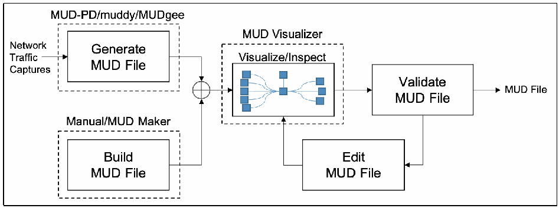
流れ図です。Network Traffic Captures（ネットワークトラフィックのキャプチャ）が、MUD-PD/muddy/MUDgee と書かれた破線の枠内の Generate MUD File（MUD ファイルの生成）に入ります。Manual/MUD Maker と書かれた破線の枠には Build MUD File（MUD ファイルの作成）があります。両方の出力は合流点でまとめられ、MUD Visualizer と書かれた破線の枠内の Visualize/Inspect（可視化・検査。ノードをつないだ小さなグラフ）に進みます。次に Validate MUD File（MUD ファイルの検証）に進み、MUD File が出力されます。Validate MUD File からは Edit MUD File（MUD ファイルの編集）にも進み、そこから Visualize/Inspect に戻ります。
Fig. 1. MUD pipeline for the device manufacturer or developer use case
図 1. デバイス製造者または開発者のユースケースにおける MUD パイプライン
In the second use case, it may be useful for network administrators to have a view of the network with an overlay of the MUD rules that have been defined by a manufacturer (Fig. 2). To drive this capability, they must be able to ingest a MUD file and compare it against the behavior observed on the network. The MUD file may be manufacturer-defined or user-defined. When the MUD file and observed behavior are inspected and compared, the network administrator could be presented with a diagram highlighting where the observed behavior does not comply with the MUD file. The UNSW researchers have developed a tool for comparing a provided MUD file with observed activity [17]. One also could imagine the MUD Visualizer tool being extended to include this capability. Because the network administrator may also be interested in reducing or expanding a device’s capabilities (i.e., tailoring it to their specific network), the ability to build and/or edit MUD files would be desirable. MUD files can currently be built/written using MUD Maker, but there is not a dedicated tool for editing MUD files. To assist in live network administration and monitoring, it may be useful for the comparisons to be done on the fly on a live network, issuing live reports or warnings when noncompliance is detected.
2 番目のユースケースでは、ネットワーク管理者にとって、製造者が定義した MUD ルールを重ねて表示したネットワークのビューがあると便利な場合があります（図 2）。この機能を実現するには、MUD ファイルを取り込み、ネットワークで観測された挙動と比較できなければなりません。MUD ファイルは、製造者が定義したものでも、ユーザーが定義したものでもかまいません。MUD ファイルと観測された挙動を検査して比較すると、観測された挙動が MUD ファイルに準拠していない箇所を強調した図をネットワーク管理者に提示できるでしょう。UNSW の研究者は、提供された MUD ファイルを観測された活動と比較するツールを開発しました [17]。MUD Visualizer ツールを拡張して、この機能を含めることも考えられます。ネットワーク管理者は、デバイスの機能を縮小または拡大すること（すなわち、特定のネットワークに合わせてデバイスを調整すること）にも関心がある場合があるため、MUD ファイルを構築または編集する機能があると望ましいでしょう。MUD ファイルは現在 MUD Maker を使って構築または記述できますが、MUD ファイルを編集する専用ツールはありません。稼働中のネットワーク管理と監視を支援するには、ネットワーク上でその場で比較を行い、非準拠を検出したときにリアルタイムでレポートや警告を発行できると便利な場合があります。
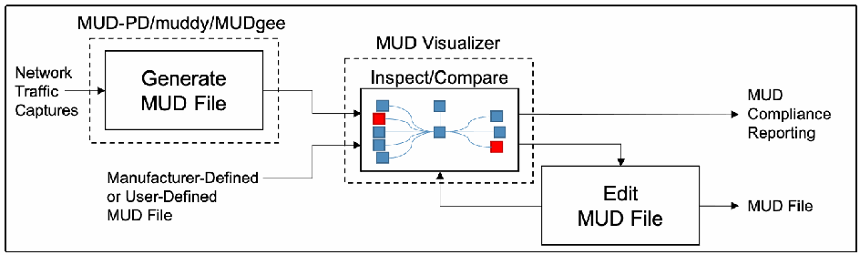
流れ図です。Network Traffic Captures（ネットワークトラフィックのキャプチャ）が、MUD-PD/muddy/MUDgee と書かれた破線の枠内の Generate MUD File（MUD ファイルの生成）に入ります。その出力と Manufacturer-Defined or User-Defined MUD File（製造者定義またはユーザー定義の MUD ファイル）が、MUD Visualizer と書かれた破線の枠内の Inspect/Compare（検査・比較。ノードをつないだ小さなグラフで、一部が赤で強調されています）に入ります。Inspect/Compare からは MUD Compliance Reporting（MUD 準拠状況の報告）が出力され、Edit MUD File（MUD ファイルの編集）にも進みます。Edit MUD File は MUD File を出力し、Inspect/Compare に戻ります。
Fig. 2. MUD pipeline for the network administrator use case
図 2. ネットワーク管理者のユースケースにおける MUD パイプライン
The third use case is more open-ended. Researchers may want access to all the same tools useful to manufacturers and network administrators, and even more. There could be interest in studying existing MUD files, investigating the implications of various MUD rules, or offering extensions (see Fig. 3). For researchers, it may be useful to emulate a network of devices based on the MUD files to understand how networks scale and devices interact.
3 番目のユースケースは、より自由度の高いものです。研究者は、製造者やネットワーク管理者に有用なものと同じツールをすべて、さらにそれ以上のツールも利用したい場合があります。既存の MUD ファイルの研究、さまざまな MUD ルールの影響の調査、拡張の提案に関心が寄せられる場合があります（図 3 を参照）。研究者にとっては、ネットワークがどのように拡大し、デバイスがどのように相互作用するかを理解するため、MUD ファイルに基づいてデバイスのネットワークをエミュレートすると役立つ場合があります。
![Flow diagram. Network Traffic passes a junction to a Network Monitor box inside a dashed box labeled ntopng/MUDids/MUDlearn, which outputs Online MUD Compliance Reporting. From the junction, traffic also goes to Save to File, which feeds a MUD File Generator inside a dashed box labeled MUD-PD/MUDgee, and a pcap Analysis box inside a dashed box labeled Wireshark or NetworkMiner. pcap Analysis and Outside Knowledge feed a MUD File Builder inside a dashed box labeled Manual/MUD Maker. The outputs of the generator and the builder, together with a Manufacturer-Defined or User-Defined MUD File, are combined at a junction; one line goes to the Network Monitor, and a line marked n goes to a dash-dot group containing MUD Visualizer (with Inspect/Compare, a small node graph with some nodes in red), MUD/Network Emulator, MUD File Editor, a vertical ellipsis, and MUD File Validator. This group outputs Offline MUD Compliance Reporting, MUD File, and Human-Readable MUD Report.](assets/ir-8349/p0029-figure-01.png)
流れ図。Network Traffic（ネットワークトラフィック）は分岐点を通って、ntopng/MUDids/MUDlearn と書かれた破線の枠内の Network Monitor（ネットワーク監視）に入り、Online MUD Compliance Reporting（オンラインの MUD 準拠状況の報告）を出力します。分岐点からはトラフィックが Save to File（ファイルへの保存）にも進み、MUD-PD/MUDgee と書かれた破線の枠内の MUD File Generator（MUD ファイル生成器）と、Wireshark or NetworkMiner と書かれた破線の枠内の pcap Analysis（pcap の分析）に渡ります。pcap Analysis と Outside Knowledge（外部の知識）は、Manual/MUD Maker と書かれた破線の枠内の MUD File Builder（MUD ファイル作成器）に入ります。生成器と作成器の出力は、Manufacturer-Defined or User-Defined MUD File（製造者定義またはユーザー定義の MUD ファイル）とともに分岐点でまとめられます。そこから 1 本の線は Network Monitor に進み、n と記された線は一点鎖線のグループに進みます。このグループには、MUD Visualizer（Inspect/Compare を含み、ノードをつないだ小さなグラフの一部のノードが赤で表示されています）、MUD/Network Emulator（MUD・ネットワークのエミュレーター）、MUD File Editor（MUD ファイル編集器）、縦の省略記号、MUD File Validator（MUD ファイル検証器）があります。このグループからは Offline MUD Compliance Reporting（オフラインの MUD 準拠状況の報告）、MUD File、Human-Readable MUD Report（人が読める MUD レポート）が出力されます。
Fig. 3. The overarching MUD pipeline, particularly as it may be used for research and development
図 3. 全体的な MUD パイプライン。特に研究開発での利用を想定したもの
This figure demonstrates how many existing and proposed future tools relevant to MUD can be leveraged to achieve the research and development goals of the use cases described above. Several boxes in Fig. 3 are labeled with existing tools that could potentially fill the associated roles in their current state or with future development. The boxes that lack a dashed outline have not been associated with any existing tools that could potentially fill the role.
この図は、上記のユースケースの研究開発の目標を達成するために、MUD に関連する既存のツールと将来提案されるツールの多くをどう活用できるかを示しています。図 3 の複数のボックスには、現在の状態のまま、または将来の開発によって、関連する役割を果たせる可能性のある既存のツールの名前が付けられています。破線の枠がないボックスには、その役割を果たせる可能性のある既存のツールが関連付けられていません。
There are a number of ways in which a MUD file may be generated or selected. MUD files may come from the manufacturer, be generated by the user using network captures through MUD-PD or MUDgee, or be written by hand with assistance from MUD Maker and Wireshark and/or NetworkMiner. These MUD files can then be used for several purposes or processed in several ways. Some purposes or processes may require using one version of MUD file, while others may require two or more, as indicated by the n in Fig. 3.
MUD ファイルを生成または選択する方法は複数あります。MUD ファイルは、製造者から提供される場合も、ユーザーが MUD-PD や MUDgee を使ってネットワークキャプチャから生成する場合も、MUD Maker と、Wireshark と NetworkMiner の一方または両方の支援を受けて手作業で記述する場合もあります。これらの MUD ファイルは、その後、複数の目的に使うことも、複数の方法で処理することもできます。目的や処理によっては、MUD ファイルの 1 つのバージョンを使う必要がある場合もあれば、図 3 の n が示すように 2 つ以上必要な場合もあります。
When using a MUD file with live analysis of network activity, there is the potential for real-time MUD compliance reporting. Additionally, extensions to MUD’s functionality are being proposed for use within the tool. Interest has been expressed in developing other MUD reporting tools. For example, the UNSW researchers have been using MUD in combination with software-defined networking to develop an intrusion detection system as well as a tool for detecting volumetric attacks, both of which have the potential for live reporting. These are called MUDids and MUDlearn, respectively [18][19]. MUD files can also be visualized using the MUD Visualizer tool that is paired with MUD Maker. This tool could potentially be extended to compare two MUD files for offline compliance and manual validation. Furthermore, tools are being proposed for automated validation of MUD files and network emulation based on these files. Development of application programming interfaces (APIs) for these tools would greatly enhance interoperability and future development. The NCCoE hopes that the community of IoT manufacturers, developers, network administrators, and researchers will continue to contribute to improvements in this area.
MUD ファイルをネットワーク活動のライブ分析とともに使うと、リアルタイムで MUD への準拠を報告できる可能性があります。また、ツール内で使用する MUD の機能拡張が提案されています。他の MUD 報告ツールの開発にも関心が示されています。たとえば、UNSW の研究者は、MUD をソフトウェア定義ネットワークと組み合わせて、侵入検知システムとボリューム型攻撃検知ツールを開発しており、どちらもライブ報告の可能性があります。これらはそれぞれ MUDids と MUDlearn と呼ばれます [18][19]。MUD ファイルは、MUD Maker と組み合わされた MUD Visualizer ツールを使って可視化することもできます。このツールを拡張して、オフラインでの準拠確認や手動検証のために 2 つの MUD ファイルを比較できるようにすることも考えられます。さらに、MUD ファイルの自動検証や、これらのファイルに基づくネットワークエミュレーションのためのツールが提案されています。これらのツール向けのアプリケーションプログラミングインターフェース（API）の開発は、相互運用性と将来の開発を大きく促進するでしょう。NCCoE は、IoT の製造者、開発者、ネットワーク管理者、研究者のコミュニティが、この分野の改善に引き続き貢献することを期待しています。
4.3. Open Problems for the Community
4.3. コミュニティにとっての未解決課題
While the NCCoE has decided to conclude feature development for MUD-PD, members of this community of interest are encouraged to consider addressing the following open problems and questions:
NCCoE は MUD-PD の機能開発を終了することを決定しましたが、この分野に関心を持つコミュニティのメンバーには、次の未解決課題や疑問への対処を検討することが推奨されています。
•Because it may be impossible to capture all potential aspects of an IoT device’s behavior, how can the accuracy of a MUD file be measured?
•IoT デバイスの挙動のあらゆる潜在的な側面を取得することは不可能な場合があるため、MUD ファイルの正確性をどのように測定できますか。
•What other situations and environmental variables could modify the behavior of a device?
•デバイスの挙動を変えうる、ほかの状況や環境変数には何がありますか。
•How can the correctness of a MUD file be verified (and ensure that unnecessary behavior is not included)?
•MUD ファイルの正しさを（不要な挙動が含まれていないことを確実にしながら）どのように検証できますか。
•What combination of captures is needed to create a comprehensive MUD file (and ensure behavior that should be permissible is not omitted)?
•包括的な MUD ファイルを作成するには、取得データのどのような組み合わせが必要か（許可されるべき挙動が欠落していないことを確実にしながら）。
•What are other applications of a MUD-PD tool or its data sets?
•MUD-PD ツールまたはそのデータセットには、ほかにどのような用途がありますか。
•What other tools should be considered for connecting in the MUD pipeline (or other pipelines)?
•MUD パイプライン（または他のパイプライン）に接続するために、ほかにどのようなツールを検討すべきですか。
•What features are desirable for a tool like this?
•このようなツールには、どのような機能があるべきですか。
•What other extractable features of packet captures might be of use to developers, network administrators, and researchers?
•開発者、ネットワーク管理者、研究者にとって有用となりうる、パケットキャプチャから抽出可能なほかの特徴には何がありますか。
•How can the quality and efficiency of the tool be improved?
•ツールの品質と効率をどのように改善できますか。
•How can a prescribed methodology for characterizing devices be ensured to be robust in its security and reliability?
•デバイスを特徴付けるために定める方法論が、セキュリティと信頼性の面で堅牢であることを、どのように確実にできますか。
•How can its efficacy be objectively demonstrated? How do alternative device characterization approaches (e.g., fingerprinting) compare?
•その有効性を客観的にどのように示せますか。代替のデバイス特徴付けアプローチ（たとえば、フィンガープリンティング）とどう比較されますか。
•Are there widespread use-cases for including capture environment variables within a PcapNg file such that it should be included as an official option in the specification?
•取得環境の変数を PcapNg ファイル内に含めることについて、仕様の公式のオプションとして含めるべきだと言えるほど広く通用するユースケースはありますか。
•What environmental variables should be included in such an option?
•そのようなオプションには、どの環境変数を含めるべきですか。
References
参考文献
[1] Fagan M, Megas K, Scarfone K, Smith M (2020) Foundational Cybersecurity Activities for IoT Device Manufacturers (National Institute of Standards and Technology, Gaithersburg, MD). https://doi.org/10.6028/NIST.IR.8259
[1] Fagan M, Megas K, Scarfone K, Smith M (2020) Foundational Cybersecurity Activities for IoT Device Manufacturers (National Institute of Standards and Technology, Gaithersburg, MD). https://doi.org/10.6028/NIST.IR.8259
[2] Lear E, Droms R, Romascanu D (2019) Manufacturer Usage Description Specification. (Internet Engineering Task Force (IETF)), IETF Request for Comments (RFC) 8520. https://doi.org/10.17487/RFC8520
[2] Lear E, Droms R, Romascanu D (2019) Manufacturer Usage Description Specification. (Internet Engineering Task Force (IETF)), IETF Request for Comments (RFC) 8520. https://doi.org/10.17487/RFC8520
[3] Thangavelu V, Divakaran DM, Sairam R, Bhunia SS, Gurusamy M (2019) DEFT: A Distributed IoT Fingerprinting Technique. IEEE Internet of Things Journal 6(1):pp 940-952. https://doi.org/10.1109/JIOT.2018.2865604
[3] Thangavelu V, Divakaran DM, Sairam R, Bhunia SS, Gurusamy M (2019) DEFT: A Distributed IoT Fingerprinting Technique. IEEE Internet of Things Journal 6(1):pp 940-952. https://doi.org/10.1109/JIOT.2018.2865604
[4] Huang DY, Apthorpe N, Acar G, Li F, Feamster N (2019) IoT Inspector: Crowdsourcing Labeled Network Traffic from Smart Home Devices at Scale. arXiv preprint. https://arxiv.org/abs/1909.09848
[4] Huang DY, Apthorpe N, Acar G, Li F, Feamster N (2019) IoT Inspector: Crowdsourcing Labeled Network Traffic from Smart Home Devices at Scale. arXiv preprint. https://arxiv.org/abs/1909.09848
[5] Meidan Y, Bohadana M, Shabtai A, Guarnizo JD, Ochoa M, Tippenhauer NO, Elovici Y (2017) ProfilIoT: A Machine Learning Approach for IoT Device Identification Based on Network Traffic Analysis. Proceedings of the Symposium on Applied Computing (SAC ’17) (ACM, Marrakech, Morocco), pp 506-509. https://doi.org/10.1145/3019612.3019878
[5] Meidan Y, Bohadana M, Shabtai A, Guarnizo JD, Ochoa M, Tippenhauer NO, Elovici Y (2017) ProfilIoT: A Machine Learning Approach for IoT Device Identification Based on Network Traffic Analysis. Proceedings of the Symposium on Applied Computing (SAC ’17) (ACM, Marrakech, Morocco), pp 506-509. https://doi.org/10.1145/3019612.3019878
[6] Bezawada B, Bachani M, Peterson J, Shirazi H, Ray I, Ray I (2018) Behavioral Fingerprinting of IoT Devices. Proceedings of the 2018 Workshop on Attacks and Solutions in Hardware Security (ASHES ’18) (ACM, Toronto, Canada), pp 41-50. https://doi.org/10.1145/3266444.3266452
[6] Bezawada B, Bachani M, Peterson J, Shirazi H, Ray I, Ray I (2018) Behavioral Fingerprinting of IoT Devices. Proceedings of the 2018 Workshop on Attacks and Solutions in Hardware Security (ASHES ’18) (ACM, Toronto, Canada), pp 41-50. https://doi.org/10.1145/3266444.3266452
[7] Aneja S, Aneja N, Islam MS (2018) IoT Device Fingerprint using Deep Learning. 2018 IEEE International Conference on Internet of Things and Intelligence System (IOTAIS) (IEEE, Bali, Indonesia), pp 174-179. https://doi.org/10.1109/IOTAIS.2018.8600824
[7] Aneja S, Aneja N, Islam MS (2018) IoT Device Fingerprint using Deep Learning. 2018 IEEE International Conference on Internet of Things and Intelligence System (IOTAIS) (IEEE, Bali, Indonesia), pp 174-179. https://doi.org/10.1109/IOTAIS.2018.8600824
[8] Dodson D, Montgomery D, Polk T, Ranganathan M, Souppaya M, Johnson S, Kadam A, Pratt C, Thakore D, Walker M, Lear E, Weis B, Barker W, Coclin D, Hojjati A, Wilson C, Jones T, Baykal A, Cohen D, Yelch K, Fashina Y, Grayeli P, Harrington J, Klosterman J, Mulugeta B, Symington S, Singh J (2021) Special Publication 1800-15: Securing Small-Business and Home Internet of Things (IoT) Devices: Mitigating Network-Based Attacks Using Manufacturer Usage Description (MUD) (National Institute of Standards and Technology, Gaithersburg, MD). https://doi.org/10.6028/NIST.SP.1800-15
[8] Dodson D, Montgomery D, Polk T, Ranganathan M, Souppaya M, Johnson S, Kadam A, Pratt C, Thakore D, Walker M, Lear E, Weis B, Barker W, Coclin D, Hojjati A, Wilson C, Jones T, Baykal A, Cohen D, Yelch K, Fashina Y, Grayeli P, Harrington J, Klosterman J, Mulugeta B, Symington S, Singh J (2021) Special Publication 1800-15: Securing Small-Business and Home Internet of Things (IoT) Devices: Mitigating Network-Based Attacks Using Manufacturer Usage Description (MUD) (National Institute of Standards and Technology, Gaithersburg, MD). https://doi.org/10.6028/NIST.SP.1800-15
[9] Lear E (2020) MUD Maker Tool. Available at https://mudmaker.org/mudmaker.html
[9] Lear E (2020) MUD Maker Tool. 入手先: https://mudmaker.org/mudmaker.html
[10] Schutijser CJTM (2018) Towards Automated DDoS Abuse Protection Using MUD Device Profiles. (University of Twente, Enschede, The Netherlands). Available at http://essay.utwente.nl/76207/
[10] Schutijser CJTM (2018) Towards Automated DDoS Abuse Protection Using MUD Device Profiles. (University of Twente, Enschede, The Netherlands). 入手先: http://essay.utwente.nl/76207/
[11] Hamza A, Ranathunga D, Gharakheili HH, Roughan M, Sivaraman V (2018) Clear as MUD: Generating, Validating and Applying IoT Behavioral Profiles. Proceedings of the 2018 Workshop on IoT Security and Privacy (IoT S&P ’18) (ACM, Budapest, Hungary), pp 8-14. https://doi.org/10.1145/3229565.3229566
[11] Hamza A, Ranathunga D, Gharakheili HH, Roughan M, Sivaraman V (2018) Clear as MUD: Generating, Validating and Applying IoT Behavioral Profiles. Proceedings of the 2018 Workshop on IoT Security and Privacy (IoT S&P ’18) (ACM, Budapest, Hungary), pp 8-14. https://doi.org/10.1145/3229565.3229566
[12] Estienne L, Innes D (2019) muddy. Available at https://github.com/lstn/muddy
[12] Estienne L, Innes D (2019) muddy. 入手先: https://github.com/lstn/muddy
[13] Watrobski P, Klosterman J (2021) muddy. Forked from muddy (https://github.com/lstn/muddy), Estienne L and Innes D. (National Institute of Standards and Technology, Gaithersburg, MD). Available at https://github.com/usnistgov/muddy
[13] Watrobski P, Klosterman J (2021) muddy. Forked from muddy (https://github.com/lstn/muddy), Estienne L and Innes D. (National Institute of Standards and Technology, Gaithersburg, MD). 入手先: https://github.com/usnistgov/muddy
[14] National Institute of Standards and Technology (2020) NIST Privacy Framework: A Tool for Improving Privacy through Enterprise Risk Management, Version 1.0. (National Institute of Standards and Technology, Gaithersburg, MD). Available at https://www.nist.gov/privacy-framework
[14] National Institute of Standards and Technology (2020) NIST Privacy Framework: A Tool for Improving Privacy through Enterprise Risk Management, Version 1.0. (National Institute of Standards and Technology, Gaithersburg, MD). 入手先: https://www.nist.gov/privacy-framework
[15] U.S. Department of Health and Human Services, Office for Human Research Protections (2020) Federal Policy for the Protection of Human Subjects (‘Common Rule’). Available at https://www.hhs.gov/ohrp/regulations-and-policy/regulations/common-rule/index.html
[15] U.S. Department of Health and Human Services, Office for Human Research Protections (2020) Federal Policy for the Protection of Human Subjects (‘Common Rule’). 入手先: https://www.hhs.gov/ohrp/regulations-and-policy/regulations/common-rule/index.html
[16] Andalibi V, Lear E (2020) MUD Visualizer Tool. Available at https://www.mudmaker.org/mudvisualizer.php
[16] Andalibi V, Lear E (2020) MUD Visualizer Tool. 入手先: https://www.mudmaker.org/mudvisualizer.php
[17] Hamza A, Ranathunga D, Gharakheili HH, Benson TA, Roughan M, Sivaraman V (2019) Verifying and Monitoring IoTs Network Behavior using MUD Profiles. arXiv preprint. https://arxiv.org/abs/1902.02484
[17] Hamza A, Ranathunga D, Gharakheili HH, Benson TA, Roughan M, Sivaraman V (2019) Verifying and Monitoring IoTs Network Behavior using MUD Profiles. arXiv preprint. https://arxiv.org/abs/1902.02484
[18] Hamza A, Gharakheili HH, Sivaraman V (2018) Combining MUD Policies with SDN for IoT Intrusion Detection. Proceedings of the 2018 Workshop on IoT Security and Privacy (IoT S&P ’18) (ACM, Budapest, Hungary), pp 1-7. https://doi.org/10.1145/3229565.3229571
[18] Hamza A, Gharakheili HH, Sivaraman V (2018) Combining MUD Policies with SDN for IoT Intrusion Detection. Proceedings of the 2018 Workshop on IoT Security and Privacy (IoT S&P ’18) (ACM, Budapest, Hungary), pp 1-7. https://doi.org/10.1145/3229565.3229571
[19] Hamza A, Gharakheili HH, Benson TA, Sivaraman V (2019) Detecting Volumetric Attacks on loT Devices via SDN-Based Monitoring of MUD Activity. Proceedings of the 2019 ACM Symposium on SDN Research (SOSR ’19) (ACM, San Jose, California), pp 36-48. https://doi.org/10.1145/3314148.3314352
[19] Hamza A, Gharakheili HH, Benson TA, Sivaraman V (2019) Detecting Volumetric Attacks on loT Devices via SDN-Based Monitoring of MUD Activity. Proceedings of the 2019 ACM Symposium on SDN Research (SOSR ’19) (ACM, San Jose, California), pp 36-48. https://doi.org/10.1145/3314148.3314352
Appendix A. Example Capture Environment
付録 A. 取得環境の例
This appendix presents an example capture environment that supports analysis of both wired and wireless IoT devices. Example procedures for capture are identified in Section 2.2. The following components compose the example environment and are depicted in Fig. 4:
本付録は、有線と無線の両方の IoT デバイスの分析を支える取得環境の例を示します。取得の手順の例は、2.2 節に示されています。次の構成要素が例の環境を構成しており、図 4 に示されています。
•a home router with tcpdump capability for capturing all network traffic, both wired and wireless (Linksys WRT1900ACS running OpenWRT) with external storage (such as a flash drive) to increase capture storage capacity of the home router
•有線と無線の両方のすべてのネットワークトラフィックを取得するための tcpdump 機能を持つ家庭用ルーター（OpenWRT を実行する Linksys WRT1900ACS）。家庭用ルーターの取得用ストレージ容量を増やすため、外部ストレージ（フラッシュドライブなど）を接続する
•a computer running Linux or macOS (can be used for both capture and analysis as needed)
•Linux または macOS を実行するコンピューター（必要に応じて、取得と分析の両方に使える）
•IoT devices to characterize (camera, smart light, smart TV, smart switch)
•特徴付けの対象となる IoT デバイス（カメラ、スマートライト、スマートテレビ、スマートスイッチ）
•other devices that interact/communicate with the IoT devices (such as smart hubs/controllers/smartphones)
•IoT デバイスとやり取り／通信するその他のデバイス（スマートハブ／コントローラー／スマートフォンなど）
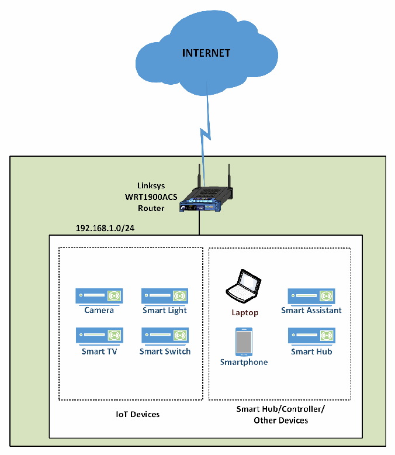
ネットワーク構成図です。INTERNET と書かれた雲が、稲妻形の線で Linksys WRT1900ACS Router（ルーター）につながっています。ルーターは 192.168.1.0/24 のネットワークを受け持ち、その枠の中に点線の 2 つのグループがあります。IoT Devices（IoT デバイス）のグループには Camera（カメラ）、Smart Light（スマート照明）、Smart TV（スマートテレビ）、Smart Switch（スマートスイッチ）があります。Smart Hub/Controller/Other Devices（スマートハブ・コントローラー・その他のデバイス）のグループには Laptop（ノートパソコン）、Smart Assistant（スマートアシスタント）、Smartphone（スマートフォン）、Smart Hub（スマートハブ）があります。
Fig. 4. Example capture architecture
図 4. 取得アーキテクチャの例
Appendix B. List of Symbols, Abbreviations, and Acronyms
付録 B. 記号、略語、頭字語の一覧
API Application Programming Interface
API アプリケーションプログラミングインターフェース（Application Programming Interface）
BSD Berkeley Software Distribution
BSD Berkeley Software Distribution
DHCP Dynamic Host Configuration Protocol
DHCP Dynamic Host Configuration Protocol
DNS Domain Name System
DNS Domain Name System
E/W East/West
E/W 東西（East/West）
FOIA Freedom of Information Act
FOIA 情報自由法（Freedom of Information Act）
GUI Graphical User Interface
GUI グラフィカルユーザーインターフェース（Graphical User Interface）
IETF Internet Engineering Task Force
IETF Internet Engineering Task Force
IoT Internet of Things
IoT モノのインターネット（Internet of Things）
IP Internet Protocol
IP Internet Protocol
IT Information Technology
IT 情報技術（Information Technology）
ITL Information Technology Laboratory
ITL 情報技術研究所（Information Technology Laboratory）
JSON JavaScript Object Notation
JSON JavaScript Object Notation
MAC Media Access Control
MAC メディアアクセス制御（Media Access Control）
MUD Manufacturer Usage Description
MUD Manufacturer Usage Description
NCCoE National Cybersecurity Center of Excellence
NCCoE National Cybersecurity Center of Excellence
NIST National Institute of Standards and Technology
NIST 米国国立標準技術研究所（National Institute of Standards and Technology）
N/S North/South
N/S 南北（North/South）
OUI Organizationally Unique Identifier
OUI 組織的に固有な識別子
pcap Packet Capture
pcap パケットキャプチャ（Packet Capture）
PcapNg Packet Capture Next Generation Dump File Format
PcapNg 次世代パケットキャプチャダンプファイル形式
RFC Request for Comments
RFC コメント要求
SDN Software-Defined Networking
SDN ソフトウェア定義ネットワーキング（Software-Defined Networking）
SPAN Switched Port Analyzer
SPAN スイッチドポートアナライザ
TCP Transmission Control Protocol
TCP 伝送制御プロトコル
TLS Transport Layer Security
TLS トランスポート層セキュリティ
UDP User Datagram Protocol
UDP ユーザーデータグラムプロトコル
UNSW University of New South Wales
UNSW ニューサウスウェールズ大学（University of New South Wales）
URL Uniform Resource Locator
URL 統一資源ロケータ
WPA Wi-Fi Protected Access
WPA Wi-Fi 保護アクセス
Appendix C. MUD-PD Tool GUI Overview
付録 C. MUD-PD ツールの GUI の概要
This appendix provides a detailed description of the MUD-PD tool as of the date of publication.
本付録は、公開日時点の MUD-PD ツールの詳細な説明を示します。
Upon starting MUD-PD for the first time (installation instructions can be found at https://github.com/usnistgov/MUD-PD), the user is greeted with the MUD-PD main window (Fig. 5). The labels contained in Fig. 5 highlight the components of this window:
MUD-PD を初めて起動する（インストール手順は https://github.com/usnistgov/MUD-PD にあります）と、MUD-PD のメインウィンドウが表示されます（図 5）。図 5 のラベルは、このウィンドウの構成要素を示しています。
•(A) button to connect to an existing database
•(A) 既存のデータベースに接続するボタン
•(B) button to create and (re)initialize a database
•(B) データベースを作成して（再）初期化するボタン
•(C) button to import a capture file
•(C) 取得ファイルをインポートするボタン
•(D) button to generate a MUD file
•(D) MUD ファイルを生成するボタン
•(E) button to generate a device report
•(E) デバイスレポートを生成するボタン
•(F) box to show a list of imported capture files
•(F) インポートされた取得ファイルの一覧を表示するボックス
•(G) box to show a list of active local network devices
•(G) アクティブなローカルネットワークデバイスの一覧を表示するボックス
•(H) box to show a list of communications
•(H) 通信の一覧を表示するボックス
•(I) button to inspect a previously imported capture file
•(I) 以前にインポートした取得ファイルを検査するボタン
•(J) toggle to limit view of communications to north/south (i.e., external) traffic or east/west (i.e., internal) traffic
•(J) 通信の表示を南北（すなわち、外部）のトラフィックまたは東西（すなわち、内部）のトラフィックに限定する切り替え
•(K) toggle for a future feature described below
•(K) 後述する将来の機能のための切り替え
•(L) buttons to select how many packets to view in the communication box
•(L) 通信ボックスに表示するパケット数を選択するボタン
![Screenshot of the MUD-PD main window, titled MUD-PD, with red boxes and red letters marking its parts. Toolbar: A (a database icon with a gear), B (a database icon with a plus sign), C (an import arrow icon), D (MUD Wizard), and E (Generate Report). F marks the Captures list with columns Date, Capture Name, Activity, Duration, Details, and Capture File Location. G marks the Devices list with columns Manufacturer, Model, Internal Name, MAC, and Category. H marks the Communication list with columns Time, MAC, IPver, Source, Destination, E/W, Protocol, Transport Protocol, Source Port, Destination Port, and Length. Along the bottom: I (Inspect), J (N/S and E/W), K (Between and Either), and L (10, 100, 1000, 10000). The status bar reads No database_connected...](assets/ir-8349/p0038-figure-01.png)
MUD-PD のメインウィンドウ（タイトル MUD-PD）の画面例で、各部分が赤い枠と赤い文字で示されています。ツールバーには A（歯車付きのデータベースのアイコン）、B（プラス記号付きのデータベースのアイコン）、C（取り込みの矢印のアイコン）、D（MUD Wizard）、E（Generate Report）があります。F は Captures の一覧で、列は Date、Capture Name、Activity、Duration、Details、Capture File Location です。G は Devices の一覧で、列は Manufacturer、Model、Internal Name、MAC、Category です。H は Communication の一覧で、列は Time、MAC、IPver、Source、Destination、E/W、Protocol、Transport Protocol、Source Port、Destination Port、Length です。下部には I（Inspect）、J（N/S と E/W）、K（Between と Either）、L（10、100、1000、10000）があります。ステータスバーには No database_connected... と表示されています。
Fig. 5. MUD-PD main window with buttons and list boxes labeled
図 5. ボタンとリストボックスに名前を付けた MUD-PD のメインウィンドウ
When running MUD-PD for the first time, and until dismissed or completed, the user is prompted to optionally provide a locally stored Fingerbank API key (Fig. 6). Fingerbank and the automated features the API key enables are briefly described in Appendix C.2.
MUD-PD を初めて実行すると、要求が閉じられるか完了するまで、ローカルに保存した Fingerbank API キーを任意で入力するよう求められます（図 6）。Fingerbank と、API キーで利用できる自動化機能は、付録 C.2 で簡単に説明します。
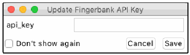
Update Fingerbank API Key という題のダイアログの画面例です。api_key の入力欄、Don't show again のチェックボックス、Cancel と Save のボタンがあります。
Fig. 6. Prompt for providing Fingerbank API key
図 6. Fingerbank API キーの入力を求めるプロンプト
The next step is to select the button labeled B to initiate the prompt to create a new database (Fig. 7).
次の手順は、B のボタンを選択して、新しいデータベースを作成するプロンプトを開始することです（図 7）。
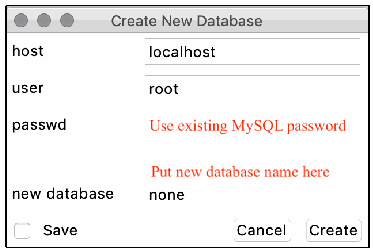
Create New Database という題のダイアログの画面例です。host（localhost）、user（root）、passwd（赤字で Use existing MySQL password と注記）、new database（none。上に赤字で Put new database name here と注記）の欄、Save のチェックボックス、Cancel と Create のボタンがあります。
Fig. 7. Prompt for creating a new database
図 7. 新しいデータベースの作成を求めるプロンプト
Every time MUD-PD is run from this point forward, the user can select the button labeled A to connect to an existing database (see Fig. 5 and Fig. 8). When connected to an existing database, the button for creating a new database may also be used to reinitialize the database, wiping all existing data. The process is irreversible, so this should be done with caution.
これ以降は MUD-PD を実行するたびに、ユーザーは A のボタンを選択して既存のデータベースに接続できます（図 5 と図 8 を参照）。既存のデータベースに接続しているときは、新しいデータベースを作成するボタンを、データベースの再初期化に使うこともできます。その場合、既存のデータはすべて消去されます。このプロセスは元に戻せないため、注意して実行すべきです。
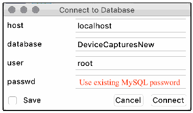
Connect to Database という題のダイアログの画面例です。host（localhost）、database（DeviceCapturesNew）、user（root）、passwd（赤字で Use existing MySQL password と注記）の欄、Save のチェックボックス、Cancel と Connect のボタンがあります。
Fig. 8. Prompt for connecting to an existing database
図 8. 既存のデータベースへの接続を求めるプロンプト
After connecting to a database, the user can examine any data contained within it. Referring to Fig. 5, the user can view a list of packet capture files (pcap or PcapNg) that have been imported thus far in the Captures box (F) on the left side. On the upper right is the section called Devices (G), which contains a list of local devices communicating in the selected capture files. The lower-right section called Communication (H) contains a list of the packets sent by the selected devices in the capture files. Above these boxes is a short toolbar with some options. From left to right, these are: connect to a database (A), create a new database (B), import a capture file (C), generate a MUD file (D), and generate a device report (E).
データベースに接続した後、ユーザーはその中のあらゆるデータを調べることができます。図 5 を参照すると、ユーザーは、左側の Captures ボックス (F) で、これまでにインポートされたパケットキャプチャファイル（pcap または PcapNg）の一覧を表示できます。右上には Devices (G) というセクションがあり、選択した取得ファイルで通信しているローカルデバイスの一覧が表示されます。右下の Communication (H) というセクションには、選択したデバイスが取得ファイル内で送信したパケットの一覧が表示されます。これらのボックスの上には、いくつかのオプションを備えた短いツールバーがあります。左から右へ、データベースへの接続 (A)、新しいデータベースの作成 (B)、取得ファイルのインポート (C)、MUD ファイルの生成 (D)、デバイスレポートの生成 (E) です。
The Captures list (F) contains metadata for the imported capture files, including the time of capture, the event captured, the duration of the capture (in seconds), the file location, and any additional details input during the import process. Below the list is an option to inspect (I) the currently selected packet capture. If more than one capture is selected, only the capture closest to the top will be opened. Inspecting a packet capture presents the same window that is opened when importing a capture file but allows the user to update/modify the details in the database. The details are identical to the import process, which is covered in detail in Appendix C.1. The user can select any number of capture files, which will modify the list of devices to show any/all local devices that have sent or received packets during the captures.
Captures の一覧 (F) には、取得時刻、取得されたイベント、取得時間（秒）、ファイルの場所、インポート時に入力された追加情報など、インポートされた取得ファイルのメタデータが含まれます。一覧の下には、現在選択しているパケットキャプチャを検査する (I) オプションがあります。複数の取得データを選択した場合は、リストの最上部に最も近い取得データだけが開かれます。パケットキャプチャを検査すると、取得ファイルのインポート時に開くものと同じウィンドウが表示されますが、データベース内の詳細を更新または変更できます。詳細はインポートのプロセスと同一であり、付録 C.1 で詳しく説明します。ユーザーは任意の数の取得ファイルを選択でき、その取得中にパケットを送受信したローカルデバイスの一部またはすべてが表示されるよう、デバイスの一覧が変わります。
The Devices list (G) includes information that either can be inferred from capture information or that has been input by the user during the import process. This includes the manufacturer, the model, a unique name for internal/lab use, the MAC address, and the general category of the device. The selection of an entry in the Devices list will determine what is listed in the Communication box. The user can either select “All…” to view all the packets communicated across the network, or a single device to view only the communication to/from that device. The user may select multiple devices to view the communication to/from any of the selected devices.
Devices の一覧 (G) には、取得情報から推測できる情報、またはインポートの過程でユーザーが入力した情報が含まれます。これには、製造者、モデル、内部／ラボ用の一意の名前、MAC アドレス、デバイスの一般的なカテゴリが含まれます。Devices の一覧でどの項目を選択するかによって、Communication ボックスに表示される内容が決まります。ユーザーは、「All…」を選択してネットワーク上で通信されたすべてのパケットを表示することも、単一のデバイスを選択してそのデバイスとの間の通信のみを表示することもできます。複数のデバイスを選択して、選択したいずれかのデバイスとの間の通信を表示することもできます。
The Communication list (H) displays parsed packet information such as the time, MAC address of the sender, IP version, source and destination addresses, scope of traffic, innermost protocol layer, transport protocol, source and destination ports, and packet length. The IP version is given as either 4 or 6. If it is blank, the packet is below the IP layer (i.e., layer 3). By scope of traffic, we mean whether it would be considered east/west (i.e., internal/local network) traffic indicated by a value of 1, or north/south (i.e., to/from an external address/network) indicated by a value of 0. The source and destination ports are those of TCP or UDP. The user can choose to filter by north/south (N/S) or east/west (E/W) traffic and can select the number of packets displayed (J). When two devices are selected, the two additional buttons (K) allow the user to view traffic either between the two devices or involving either device. Last, the user may select to view the first 10, 100, 1000, or 10,000 packets that satisfy the above filters (L).
Communication の一覧 (H) には、時刻、送信者の MAC アドレス、IP バージョン、送信元アドレスと宛先アドレス、トラフィックの範囲、最も内側のプロトコル層、トランスポートプロトコル、送信元ポートと宛先ポート、パケット長など、解析されたパケット情報が表示されます。IP バージョンは 4 または 6 で示されます。空白の場合、そのパケットは IP 層（すなわち、レイヤー 3）より下位のものです。トラフィックの範囲とは、東西（すなわち、内部／ローカルネットワーク）のトラフィックと見なされる場合は値 1 で、南北（すなわち、外部のアドレス／ネットワークとの間）の場合は値 0 で示すことを意味します。送信元ポートと宛先ポートは、TCP または UDP のものです。ユーザーは、南北（N/S）または東西（E/W）のトラフィックでフィルターでき、表示するパケット数を選択できます (J)。2 つのデバイスを選択すると、2 つの追加のボタン (K) により、2 つのデバイス間のトラフィック、またはいずれかのデバイスが関わるトラフィックを表示できます。最後に、ユーザーは、上記のフィルターを満たす最初の 10、100、1000、10,000 パケットのいずれかを表示することを選択できます (L)。
C.1. Importing a New Packet Capture
C.1. 新しいパケットキャプチャのインポート
The potential of this tool begins to be realized when importing a packet capture file. Here, the user is prompted to select the file to import (Fig. 9). If the file is a PcapNg file, MUD-PD will automatically search for embedded metadata, otherwise the user can input metadata regarding the capture. This includes the phase of the device life cycle being captured. In most cases, this will be normal operation. The other two options are setup and removal, as described in Section 2.1.1. The user can also select all the environmental variables that apply, including whether:
このツールの可能性は、パケットキャプチャファイルをインポートするときに発揮され始めます。ここでユーザーは、インポートするファイルを選択するよう求められます（図 9）。ファイルが PcapNg ファイルの場合、MUD-PD は埋め込まれたメタデータを自動的に検索し、そうでない場合、ユーザーは取得に関するメタデータを入力できます。これには、取得対象となるデバイスのライフサイクルのフェーズが含まれます。ほとんどの場合、これは通常運用です。他の 2 つの選択肢は、2.1.1 節で説明したセットアップと撤去です。ユーザーは、次の項目が該当するかどうかを含め、該当するすべての環境変数も選択できます。
•internet connectivity was enabled
•インターネット接続が有効だったか
•the device’s preferred DNS was enabled
•デバイスの優先 DNS が有効になっていたか
•the device was isolated on the network
•デバイスがネットワーク上で分離されていたか
•there were notable physical environmental changes
•物理環境に顕著な変化があったか
•the capture was of a full network of devices
•取得対象がデバイスのネットワーク全体だったか
•a controller or hub was involved
•コントローラーまたはハブが関与していたか
•a device of the same manufacturer as the primary device of interest was connected
•主たる対象デバイスと同じ製造者のデバイスが接続されていたか
•there was human interaction with the device
•デバイスとの人による相互作用があったか
Whether the capture was duration-based or action-based should also be selected. The specific duration (in seconds) or action can be input, which is highly recommended for auditability and ease of use.
取得が継続時間ベースか動作ベースかも選択すべきです。監査可能性と使いやすさを高めるため、具体的な継続時間（秒）または動作を入力することが強く推奨されます。
![Screenshot of a dialog titled Import Packet Capture. It has a File field with a browse button and a Notes (optional) field. Under Lifecycle Phase are radio buttons Setup, Normal Operation (selected), and Removal. Under Environmental Variables are checkboxes Internet (checked), Preferred DNS Enabled (checked), Isolated, Notable Physical Changes, Full Network, Controller/Hub, Same Manufacturer, and Human Interaction. Under Capture Type are a Duration-based checkbox with a Duration field and an Action-based checkbox with an Action field. Cancel and Import buttons are at the bottom.](assets/ir-8349/p0041-figure-01.png)
Import Packet Capture という題のダイアログの画面例です。参照ボタン付きの File の欄と Notes (optional) の欄があります。Lifecycle Phase の下には Setup、Normal Operation（選択済み）、Removal のラジオボタンがあります。Environmental Variables の下には Internet（チェック済み）、Preferred DNS Enabled（チェック済み）、Isolated、Notable Physical Changes、Full Network、Controller/Hub、Same Manufacturer、Human Interaction のチェックボックスがあります。Capture Type の下には Duration-based のチェックボックスと Duration の欄、Action-based のチェックボックスと Action の欄があります。下部に Cancel と Import のボタンがあります。
Fig. 9. Prompt for importing packet captures into database
図 9. パケットキャプチャをデータベースにインポートするためのプロンプト
C.2. Viewing and Importing Devices
C.2. デバイスの表示とインポート
During the packet capture import process, the user is presented with lists of the labeled and unlabeled devices that were seen in the capture file (Fig. 10). A labeled device is one that has been seen in a previously imported capture and has had related data imported to the database. An unlabeled device may have been seen in a previous capture but has not yet had any additional data imported. This packet capture import window also includes the time and date of the capture, which is extracted from the capture file, but can be edited if the user believes either or both are incorrect for some reason. The left list is the unlabeled devices. MUD-PD attempts to look up the manufacturer based on the Organizationally Unique Identifier (OUI), which is the first 24 bits of the MAC address, and also lists the IP addresses (both v4 and v6 when available). The user can select any device in this list and import additional details into the database, moving it to the list of labeled devices on the right. In addition to the information found in the unlabeled list, this window includes all the information available in the device list of the main window (Fig. 5). The state of the device (i.e., the firmware version) can also be updated here. This field is not used in any automated processes of MUD-PD but can be queried through MySQL.
パケットキャプチャのインポート処理中、ユーザーには、取得ファイルで見られたラベル付きデバイスとラベルなしデバイスの一覧が提示されます（図 10）。ラベル付きデバイスとは、以前にインポートした取得データで見られ、関連データがデータベースにインポートされたことのあるデバイスです。ラベルなしデバイスは、以前の取得データで見られた可能性がありますが、追加のデータはまだインポートされていません。このパケットキャプチャのインポートウィンドウには、取得ファイルから抽出された取得の日時も含まれており、ユーザーが何らかの理由でどちらか、または両方が誤っていると考える場合は編集できます。左側の一覧がラベルなしデバイスです。MUD-PD は、MAC アドレスの最初の 24 ビットである Organizationally Unique Identifier（OUI）に基づいて製造者の検索を試み、IP アドレス（利用可能な場合は v4 と v6 の両方）も一覧にします。ユーザーはこの一覧の任意のデバイスを選択して追加の詳細をデータベースにインポートでき、そのデバイスは右側のラベル付きデバイスの一覧に移ります。このウィンドウには、ラベルなしの一覧にある情報に加えて、メインウィンドウのデバイス一覧（図 5）で利用できるすべての情報が含まれます。デバイスの状態（すなわち、ファームウェアのバージョン）もここで更新できます。このフィールドは MUD-PD の自動化されたプロセスでは使われませんが、MySQL を通じて問い合わせできます。
![Screenshot of a window titled ietf-hackathon_pieces_commented.pcapng14. It shows Date of Capture 2019-07-20 and Time of Capture 16:39:57. Under Devices, the Unlabeled list (columns Manufacturer, MAC, IPv4, and a truncated IPv6 column) lists eleven devices: Cisco Systems, Inc (several rows), GOOD WAY IND. CO., LTD., Raspberry Pi Foundation, and REALTEK SEMICONDUCTOR CORP.; IPv4 values include Not found, 169.254.35.240, 169.254.110.106, 192.168.10.111, and 209.115.181.107, with truncated fe80:: IPv6 addresses. The MAC column is blurred. The Labeled list (columns Manufacturer, Model, Internal Name, Category, MAC) shows Raspberry Pi Foundation, Raspberry Pi 2B, raspi2B_0, dev kit, with the MAC blurred. Buttons: Close, Label Device, and Modify State.](assets/ir-8349/p0042-figure-01.png)
ietf-hackathon_pieces_commented.pcapng14 という題のウィンドウの画面例です。Date of Capture は 2019-07-20、Time of Capture は 16:39:57 です。Devices の下の Unlabeled（未ラベル）の一覧（列は Manufacturer、MAC、IPv4 と、途中で切れた IPv6 の列）には 11 台のデバイスがあり、Cisco Systems, Inc（複数行）、GOOD WAY IND. CO., LTD.、Raspberry Pi Foundation、REALTEK SEMICONDUCTOR CORP. です。IPv4 の値は Not found、169.254.35.240、169.254.110.106、192.168.10.111、209.115.181.107 などで、IPv6 は途中で切れた fe80:: のアドレスです。MAC の列はぼかされています。Labeled（ラベル付き）の一覧（列は Manufacturer、Model、Internal Name、Category、MAC）には Raspberry Pi Foundation、Raspberry Pi 2B、raspi2B_0、dev kit があり、MAC はぼかされています。ボタンは Close、Label Device、Modify State です。
Fig. 10. Window listing labeled and unlabeled devices during the packet capture import process
図 10. パケットキャプチャのインポート処理中の、ラベル付きデバイスとラベルなしデバイスを一覧するウィンドウ
Selecting the “Label Device” button in Fig. 10 presents the user with a window with fields for adding or modifying the manufacturer, model, internal name, category, notes, and list of capabilities (Fig. 11). The manufacturer and model are required fields. In addition to being required, the internal name must be unique. The device category and notes are optional fields but may be useful for documentation and future analyses. The capabilities consist of MUD, Wi-Fi, Ethernet, Bluetooth, ZigBee, ZWave, 3G, 4G, 5G, and other. Other than MUD, all the capabilities are network interfaces, of which at least one must be selected. The MAC address of the device is also listed but may not be modified, as this is determined from the capture itself and is used as an identifier. In addition, integration with the Fingerbank API is included, assisting the user by identifying the device model based on the Dynamic Host Configuration Protocol (DHCP) fingerprint and MAC address. To enable this feature, the user must obtain and enter a valid Fingerbank API key as shown in Fig. 6.
図 10 の「Label Device」ボタンを選択すると、製造者、モデル、内部名、カテゴリ、メモ、機能の一覧を追加または変更するためのフィールドを持つウィンドウが表示されます（図 11）。製造者とモデルは必須フィールドです。内部名は必須であることに加えて、一意でなければなりません。デバイスのカテゴリとメモは任意のフィールドですが、文書化や将来の分析に役立つ場合があります。機能は、MUD、Wi-Fi、Ethernet、Bluetooth、ZigBee、ZWave、3G、4G、5G、その他からなります。MUD を除き、すべての機能はネットワークインターフェースであり、少なくとも 1 つを選択する必要があります。デバイスの MAC アドレスも一覧に表示されますが、これは取得データ自体から決定され、識別子として使われるため、変更できません。加えて、Fingerbank API との統合が含まれており、Dynamic Host Configuration Protocol（DHCP）フィンガープリントと MAC アドレスに基づいてデバイスのモデルを識別することで、ユーザーを支援します。この機能を有効にするには、図 6 に示すように、有効な Fingerbank API キーを入手して入力する必要があります。
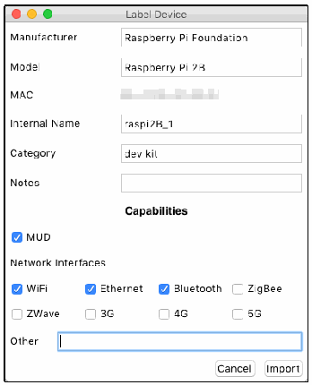
Label Device という題のダイアログの画面例です。Manufacturer（Raspberry Pi Foundation）、Model（Raspberry Pi 2B）、MAC（ぼかし）、Internal Name（raspi2B_1）、Category（dev kit）、Notes（空欄）の欄があります。Capabilities では MUD にチェックがあります。Network Interfaces では WiFi、Ethernet、Bluetooth にチェックがあり、ZigBee、ZWave、3G、4G、5G はチェックがありません。Other の入力欄と、Cancel と Import のボタンがあります。
Fig. 11. Window prompt for importing a device
図 11. デバイスをインポートするためのウィンドウ
After the metadata has been input and the “Import” button in Fig. 11 has been selected, the user is prompted to optionally input the firmware version of the device (Fig. 12). While the firmware information is not used in MUD-PD currently, it may be worth documenting for future research or analysis.
メタデータを入力して図 11 の「Import」ボタンを選択すると、ユーザーは、デバイスのファームウェアのバージョンを任意で入力するよう求められます（図 12）。ファームウェアの情報は現在 MUD-PD では使われませんが、将来の研究や分析のために文書化する価値があるかもしれません。
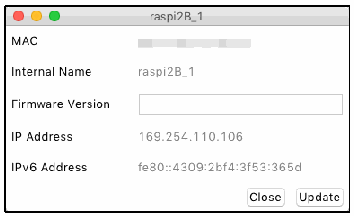
raspi2B_1 という題のダイアログの画面例です。MAC（ぼかし）、Internal Name の raspi2B_1、空欄の Firmware Version の欄、IP Address の 169.254.110.106、IPv6 Address の fe80::4309:2bf4:3f53:365d と、Close と Update のボタンがあります。
Fig. 12. Window prompting to update the firmware version logged in the database
図 12. データベースに記録されたファームウェアバージョンの更新を求めるウィンドウ
This window can also be reached by selecting a labeled device in Fig. 10 followed by clicking the “Modify State” button in the case where a firmware update has been received or the firmware version needs to be modified.
このウィンドウには、ファームウェアの更新を受けた場合やファームウェアのバージョンを変更する必要がある場合に、図 10 でラベル付きデバイスを選択して「Modify State」ボタンをクリックすることでも到達できます。
C.3. Generating Device Reports
C.3. デバイスレポートの生成
The process for generating a device report is straightforward (Fig. 13). The user may generate reports for any combination of devices or a single device. After selecting the device(s) for which to generate the report, the list of packet captures is updated to only those in which the device has sent or received packets. The user may select all or any combination of packets to report on.
デバイスレポートの生成プロセスは簡単です（図 13）。ユーザーは、デバイスの任意の組み合わせ、または単一のデバイスのレポートを生成できます。レポートを生成するデバイスを選択すると、パケットキャプチャの一覧が、そのデバイスがパケットを送受信したものだけに更新されます。ユーザーは、レポートの対象にするパケットとして、すべて、または任意の組み合わせを選択できます。
![Screenshot of a window titled Generate Device Report Wizard. The upper list, Device for Report, has columns Internal Name, Manufacturer, Model, MAC Address (blurred), and Category, with rows All..., raspi2B_0 (Raspberry Pi Foundation, Raspberry Pi 2B, dev kit), raspi2B_1 (Raspberry Pi Foundation, Raspberry Pi 2B, dev kit), and ublox0 (ARM, C027, dev kit). The lower list, Select Packet Captures (PCAPs), has columns Date, Capture Name, Activity, Duration (seconds), Details, Capture File Location (partly blurred), and Hash (truncated), with rows such as All..., 2019-07-20 ietf-hackathon_pieces.pcap test action test notes, further ietf-hackathon_pieces.pcap files numbered 1 to 9, and 2019-05-28 BelkinWemoLightSwitch(2)Se. Buttons: Close and Generate.](assets/ir-8349/p0043-figure-01.png)
Generate Device Report Wizard という題のウィンドウの画面例です。上の Device for Report の一覧の列は Internal Name、Manufacturer、Model、MAC Address（ぼかし）、Category で、行は All...、raspi2B_0（Raspberry Pi Foundation、Raspberry Pi 2B、dev kit）、raspi2B_1（Raspberry Pi Foundation、Raspberry Pi 2B、dev kit）、ublox0（ARM、C027、dev kit）です。下の Select Packet Captures (PCAPs) の一覧の列は Date、Capture Name、Activity、Duration (seconds)、Details、Capture File Location（一部ぼかし）、Hash（途中で切れています）で、All...、2019-07-20 ietf-hackathon_pieces.pcap test action test notes、1 から 9 の番号の付いた ietf-hackathon_pieces.pcap のファイル、2019-05-28 BelkinWemoLightSwitch(2)Se などの行があります。ボタンは Close と Generate です。
Fig. 13. Prompt for generating a human-readable device report
図 13. 人間が読めるデバイスレポートを生成するためのプロンプト
The generated report lists the packet captures in which the device is seen, including the hash of the file. The example report, shown in Fig. 14, contains only one file (i.e., example_file.pcap), whereas a typical report may contain many. The capture metadata is also listed for each file. In addition, listed under each capture file are the other local devices seen on the network during the capture. The internal name (if the device is labeled) is also given. A future version of this report may include more specific information about the communication to/from the device, similar to what would be listed in the device’s MUD file (if it had one).
生成されたレポートには、ファイルのハッシュを含め、そのデバイスが見られるパケットキャプチャが一覧にされます。図 14 に示す例のレポートには 1 つのファイル（すなわち、example_file.pcap）しか含まれていませんが、一般的なレポートには多くのファイルが含まれる場合があります。取得のメタデータも、ファイルごとに一覧にされます。さらに、各取得ファイルの下には、取得中にネットワーク上で見られたその他のローカルデバイスが一覧にされます。内部名（デバイスにラベルが付いている場合）も示されます。このレポートの将来のバージョンには、デバイスとの間の通信に関する、より具体的な情報（デバイスの MUD ファイルがあるとすれば、そこに記載されるような情報）が含まれるかもしれません。
![Text of an example device report: This document serves to indicate the devices and operations captured in addition to any specific procedures or environmental details of the captures. Device: raspi0. MAC: b8:27:eb:01:23:45. Capture File: example_file.pcap. SHA256 Hash: e83a34cbf4eab7bd8726bb9f4fce1db89b3928625c27a300d3c557ea7056466f. Device Phase: Normal Operation. Environmental Variables: Internet enabled True; Human Interaction False; Preferred DNS Enabled True; Device Isolated False. Action-based Capture: False. Duration-based Capture: True; Intended Duration: 600; Actual Duration: 754. Start Time: 2020-02-02 12:34:56. End Time: 2020-02-02 12:47:30. Other Devices: Name: router0, MAC: 01:23:45:67:89:ab; Name: controller0, MAC: fe:dc:ba:98:76:54; Name: raspi1, MAC: d8:27:eb:67:89:ab. Notes: Example capture with made-up devices.](assets/ir-8349/p0044-figure-02.png)
デバイスレポートの例の本文です。この文書は、キャプチャされたデバイスと操作に加えて、キャプチャの具体的な手順や環境の詳細を示すものです。デバイス: raspi0。MACアドレス: b8:27:eb:01:23:45。キャプチャファイル: example_file.pcap。SHA256ハッシュ: e83a34cbf4eab7bd8726bb9f4fce1db89b3928625c27a300d3c557ea7056466f。デバイスのフェーズ: 通常運用。環境変数: インターネット有効 True; 人との相互作用 False; 優先DNS有効 True; デバイス隔離 False。動作ベースのキャプチャ: False。継続時間ベースのキャプチャ: True; 予定時間: 600; 実際の時間: 754。開始時刻: 2020-02-02 12:34:56。終了時刻: 2020-02-02 12:47:30。他のデバイス: 名前: router0, MACアドレス: 01:23:45:67:89:ab; 名前: controller0, MACアドレス: fe:dc:ba:98:76:54; 名前: raspi1, MACアドレス: d8:27:eb:67:89:ab。注記: 架空のデバイスによるキャプチャの例。
Fig. 14. Example device report showing the details of a single packet capture
図 14. 1 つのパケットキャプチャの詳細を示すデバイスレポートの例
C.4. Generating a MUD File
C.4. MUD ファイルの生成
Generating the MUD file requires more user input and involves more steps than generating the device report. When the user clicks the “MUD Wizard” button (D in Fig. 5), the user is first prompted to select a device for which to generate a MUD file (Fig. 15).
MUD ファイルの生成には、デバイスレポートの生成よりも多くのユーザー入力が必要で、手順も多くなります。ユーザーが「MUD Wizard」ボタン（図 5 の D）をクリックすると、まず、MUD ファイルを生成するデバイスを選択するよう求められます（図 15）。
![Screenshot of a window titled MUD Wizard, Device to Profile, listing devices with columns Internal Name, Manufacturer, Model, MAC Address (blurred), and Category: azurewave0 (AzureWave Technology Inc., Thing); ghm0 (Google, Inc., Google Home Mini?); Google Home Mini (Google, Inc., Google Home Mini, smart speaker); Lab iPhone (Apple, Inc., Apple iPhone, smartphone); Laptop (Dell Inc., Lattitude 7450, Laptop); raspi2 (Raspberry Pi Foundation, raspi 2B, devKit); raspi2b_0 (Raspberry Pi Foundation, Raspberry Pi 2B, Dev kit; selected); raspi2b_1 (Raspberry Pi Foundation, Raspberry Pi 2B, development k, truncated); raspi2b_2 (Raspberry Pi Foundation, Raspberry Pi 2B); switch0 (Cisco Systems, Inc, SwitchExample, switch); ublox0 (ARM, C027a, dev kit). Buttons: Exit and Next.](assets/ir-8349/p0044-figure-01.png)
MUD Wizard という題のウィンドウの Device to Profile の画面例です。列は Internal Name、Manufacturer、Model、MAC Address（ぼかし）、Category で、デバイスは azurewave0（AzureWave Technology Inc.、Thing）、ghm0（Google, Inc.、Google Home Mini?）、Google Home Mini（Google, Inc.、Google Home Mini、smart speaker）、Lab iPhone（Apple, Inc.、Apple iPhone、smartphone）、Laptop（Dell Inc.、Lattitude 7450、Laptop）、raspi2（Raspberry Pi Foundation、raspi 2B、devKit）、raspi2b_0（Raspberry Pi Foundation、Raspberry Pi 2B、Dev kit。選択中）、raspi2b_1（Raspberry Pi Foundation、Raspberry Pi 2B、development k と途中で切れています）、raspi2b_2（Raspberry Pi Foundation、Raspberry Pi 2B）、switch0（Cisco Systems, Inc、SwitchExample、switch）、ublox0（ARM、C027a、dev kit）です。ボタンは Exit と Next です。
Fig. 15. Prompt for selecting a device for which the MUD file will be generated
図 15. MUD ファイルを生成する対象のデバイスを選択するためのプロンプト
The next step is to fill in the device details (Fig. 16). Here the support URL (i.e., MUD URL), documentation URL, and device description can be provided. Additionally, the user may select which types of communication to define in the MUD file: internet, local, same manufacturer, other named manufacturers, network-defined controller (my-controller), and controller. Internet and local communication may automatically be selected if traffic involving the device has been identified going N/S or E/W, respectively.
次の手順は、デバイスの詳細を入力することです（図 16）。ここでは、サポート URL（すなわち、MUD URL）、文書の URL、デバイスの説明を指定できます。さらに、ユーザーは、MUD ファイルで定義する通信の種類として、インターネット、ローカル、同一製造者、名前付きのその他の製造者、ネットワーク定義のコントローラー（my-controller）、コントローラーを選択できます。デバイスが関わるトラフィックが南北または東西に流れていることが特定されている場合、インターネット通信とローカル通信は、それぞれ自動的に選択されることがあります。
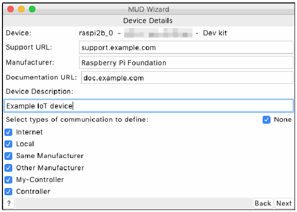
MUD Wizard という題のウィンドウの Device Details の画面例です。Device: raspi2b_0 -（ぼかした MAC）- Dev kit、Support URL: support.example.com、Manufacturer: Raspberry Pi Foundation、Documentation URL: doc.example.com、Device Description: Example IoT device です。Select types of communication to define の下では、None、Internet、Local、Same Manufacturer、Other Manufacturer、My-Controller、Controller のチェックボックスがすべてチェックされています。ボタンは ?、Back、Next です。
Fig. 16. Prompt for providing device details including the support and document URLs
図 16. サポートや文書の URL を含むデバイスの詳細を入力するためのプロンプト
Proceeding to the next page provides the user with the ability to define a list of rules for the given communication type (Fig. 17). The layout of the window is the same for each of the six communication types. For internet and local communication, the window is populated with a list of hosts that were observed to have communicated with the device in any of the packet capture files stored in the database. DNS resolution is attempted for all internet hosts, while the IP addresses for all local hosts are only for the user’s reference, since they are not used in the MUD specification [2].
次のページに進むと、ユーザーは、指定した通信の種類に対するルールの一覧を定義できます（図 17）。ウィンドウのレイアウトは、6 つの通信の種類のどれでも同じです。インターネット通信とローカル通信では、データベースに保存されているいずれかのパケットキャプチャファイルで、デバイスと通信したことが観測されたホストの一覧が、ウィンドウに表示されます。インターネットのすべてのホストについて DNS 解決が試みられます。一方、ローカルのすべてのホストの IP アドレスは、MUD 仕様 [2] で使われないため、ユーザーの参考用にすぎません。
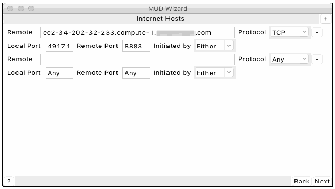
MUD Wizard という題のウィンドウの Internet Hosts の画面例です。1 つ目の規則は Remote が ec2-34-202-32-233.compute-1.（ぼかし）.com、Protocol が TCP、Local Port が 49171、Remote Port が 8883、Initiated by が Either です。2 つ目の規則は Remote が空欄、Protocol が Any、Local Port が Any、Remote Port が Any、Initiated by が Either です。規則ごとにマイナスのボタンがあり、右上にプラスのボタンがあります。ボタンは ?、Back、Next です。
Fig. 17. Prompt for providing internet communication rules
図 17. インターネット通信ルールを入力するためのプロンプト
The window for local communication rules (Fig. 18) functions slightly differently from the internet communication rules window. As the local traffic observed may be defined in a more fine-grained manner than general local traffic (i.e., it may fall under one of the other communication types such as same manufacturer or controller), these local rules can be copied or moved to any of the other non-internet communication types that were selected to be defined. Each of the windows for the remaining communication types also allows rules to be copied or moved.
ローカル通信ルールのウィンドウ（図 18）は、インターネット通信ルールのウィンドウとは少し異なる動作をします。観測されたローカルトラフィックは、一般的なローカルトラフィックよりも細かく定義できる場合（すなわち、同一製造者やコントローラーなど、ほかの通信の種類のいずれかに該当する場合）があるため、これらのローカルルールは、定義するよう選択されたインターネット以外の他の通信の種類のいずれにもコピーまたは移動できます。残りの通信の種類の各ウィンドウでも、ルールをコピーまたは移動できます。
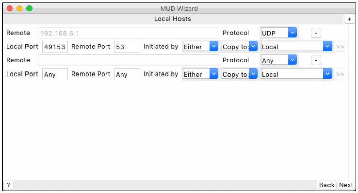
MUD Wizard という題のウィンドウの Local Hosts の画面例です。1 つ目の規則は Remote が 192.168.6.1（灰色表示）、Protocol が UDP、Local Port が 49153、Remote Port が 53、Initiated by が Either、Copy to: が Local で、>> のボタンがあります。2 つ目の規則は Remote が空欄、Protocol が Any、Local Port が Any、Remote Port が Any、Initiated by が Either、Copy to: が Local で、>> のボタンがあります。規則ごとにマイナスのボタンがあり、右上にプラスのボタンがあります。ボタンは ?、Back、Next です。
Fig. 18. Prompt for providing local communication rules
図 18. ローカル通信ルールを入力するためのプロンプト
For each remote host observed to be communicating with the target device, the communication protocol (i.e., TCP or UDP) is automatically selected based on the observed communication. The local and remote ports are also automatically filled based on the observed communication. If the ports are blank or listed as “any,” any port will be allowed. The initiation direction can be manually specified (i.e., by selecting “thing” or “remote” in the “Initiated by” drop down) to indicate whether the IoT device or the host, respectively, must be the party to start the communication. By default, “either” is selected, indicating that either side may initiate the communication.
対象のデバイスと通信していることが観測された各リモートホストについて、通信プロトコル（すなわち、TCP または UDP）は、観測された通信に基づいて自動的に選択されます。ローカルポートとリモートポートも、観測された通信に基づいて自動的に入力されます。ポートが空白または「any」と表示されている場合、どのポートも許可されます。通信を開始する方向は、手動で指定でき（すなわち、「Initiated by」のドロップダウンで「thing」または「remote」を選択）、IoT デバイスとホストのどちらが通信を開始する側でなければならないかを、それぞれ示します。既定では「either」が選択されており、どちらの側も通信を開始できることを示します。
The MUD specification [2] defines several conditions that apply to the protocol, ports, and initiation direction. If “any” protocol is allowed (i.e., both TCP and UDP), the ports and initiation direction are ignored. If TCP is selected, the ports and initiation direction can be specified. If UDP is selected, the initiation direction is ignored, and communication can be initiated by either side.
MUD 仕様 [2] は、プロトコル、ポート、開始方向に適用されるいくつかの条件を定義しています。「any」プロトコルが許可されている場合（すなわち、TCP と UDP の両方）、ポートと開始方向は無視されます。TCP を選択した場合は、ポートと開始方向を指定できます。UDP を選択した場合は、開始方向は無視され、どちらの側からも通信を開始できます。
Not all communication types (i.e., local, same manufacturer, and network-defined controller) define a host in the communication rules. For these communication types, any input intended to define the remote host is ignored. Local communication rules allow any local device to follow the indicated rules, same manufacturer uses the manufacturer hostname specified on the second page, and network-defined controllers are defined by the local network administrator.
すべての通信の種類（すなわち、ローカル、同一製造者、ネットワーク定義のコントローラー）が、通信ルールでホストを定義するわけではありません。これらの通信の種類では、リモートホストを定義する意図で入力されたものは無視されます。ローカル通信ルールは、任意のローカルデバイスが指示されたルールに従うことを許可し、同一製造者は 2 ページ目で指定された製造者のホスト名を使い、ネットワーク定義のコントローラーはローカルネットワークの管理者が定義します。
Once all the desired communication type rules have been defined, the user is provided with a preview of the resulting MUD file (Fig. 19). The “Advanced mode” toggle at the bottom of the window allows advanced users to manually modify the outputted MUD file at their own risk. There is no guarantee that a modified output file will be formatted or defined correctly.
必要なすべての通信の種類のルールを定義し終えると、ユーザーには、生成される MUD ファイルのプレビューが提供されます（図 19）。ウィンドウ下部の「Advanced mode」の切り替えにより、上級ユーザーは自らのリスクで、出力される MUD ファイルを手動で変更できます。変更された出力ファイルが正しく整形または定義される保証はありません。
![Screenshot of a window titled MUD Wizard, MUD File Summary, showing the beginning of a JSON MUD file: { "ietf-mud:mud": { "mud-version": 1, "mud-url": "support.example.com", "is-supported": true, "mfg-name": "Raspberry Pi Foundation", "documentation": "doc.example.com", "systeminfo": "raspi2b_0", "cache-validity": 48, "last-update": "2021-05-03T16:14:56", "from-device-policy": { "access-lists": { "access-list": [ { "name": "mud-70313-v4fr" } ] } (continues). An Advanced mode checkbox and Back and Save buttons are at the bottom.](assets/ir-8349/p0047-figure-01.png)
MUD Wizard という題のウィンドウの MUD File Summary の画面例で、JSON 形式の MUD ファイルの冒頭が表示されています。{ "ietf-mud:mud": { "mud-version": 1, "mud-url": "support.example.com", "is-supported": true, "mfg-name": "Raspberry Pi Foundation", "documentation": "doc.example.com", "systeminfo": "raspi2b_0", "cache-validity": 48, "last-update": "2021-05-03T16:14:56", "from-device-policy": { "access-lists": { "access-list": [ { "name": "mud-70313-v4fr" } ] } と続きます。下部に Advanced mode のチェックボックスと、Back と Save のボタンがあります。
Fig. 19. Preview of the MUD file to be generated
図 19. 生成される MUD ファイルのプレビュー